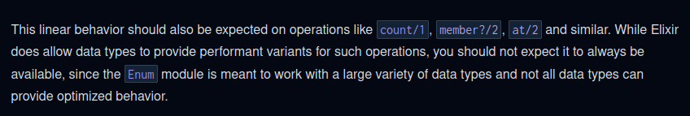
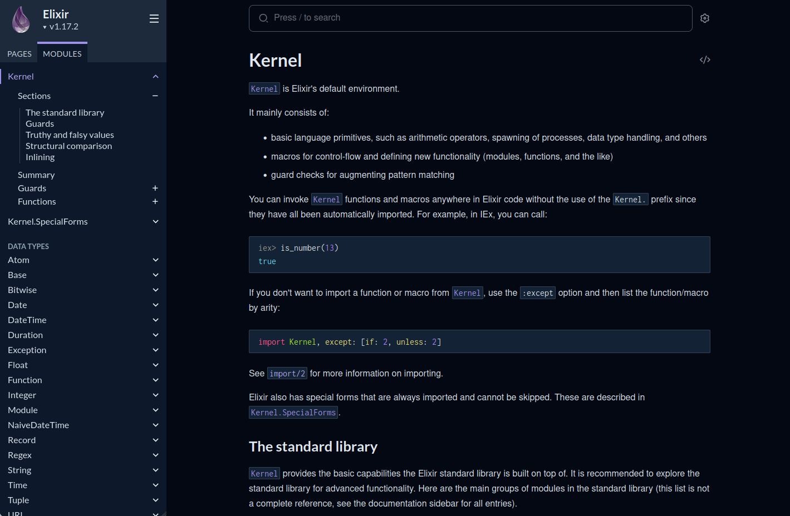
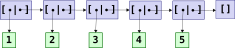
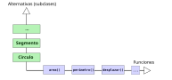
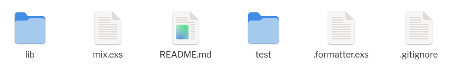
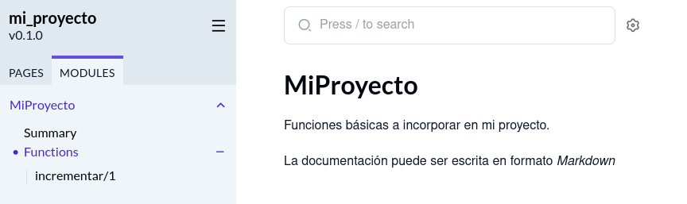

Tema 1
Programación funcional secuencial
Dpto. de Sistemas Informáticos y Computación
Facultad de Informática
Universidad Complutense de Madrid
1.1Primeros pasos en Elixir
Funciones simples y módulos
Definición de una función
def cuadrado(x) do
x *
x
end
def suma_cuadrados(x, y)
do
cuadrado(x) +
cuadrado(y)
end
En general, una función se define del siguiente modo:
def nombre_funcion (arg1, arg2, ...) do
expresion
end
Definición de un módulo
- Toda función ha de estar definida dentro de un
módulo, definido mediante
defmodule.
# Fichero funciones.ex Comentarios comienzan por
#
defmodule FuncionesSimples do Nombre del
módulo
def cuadrado(x)
do
x *
x
end
def
suma_cuadrados(x, y) do
cuadrado(x) +
cuadrado(y)
end
end
Sintaxis one-liner
- Si el cuerpo de una función es relativamente simple, puede abreviarse su definición:
Sin abreviar:
def suma(x, y) do
x +
y
end
Abreviada:
def suma(x, y), do: x + y
Con la sintaxis abreviada:
- Coma (
,) antes dedo - Dos puntos (
:) después dedo - No se pone
end
Esto se aplica a cualquier estructura de Elixir que haga uso de
do:(
defmodule,def,if,case, etc.)
cualquier_cosa_1
do
cualquier_cosa_2
end
equivale a
cualquier_cosa_1, do: cualquier_cosa_2
Llamadas a funciones
- Si la función llamada está dentro del mismo módulo, basta con indicar el nombre de la función seguido de sus argumentos:
defmodule FuncionesSimples
do
def cuadrado(x)
do
x *
x
end
def
suma_cuadrados(x, y) do
cuadrado(x) + cuadrado(y) Llamadas
dentro del mismo
módulo
end
end
- Si la función llamada está en otro módulo, debe ir precedida por el nombre de dicho módulo.
defmodule Modulo1
do
def cuadrado(x)
do
x *
x
end
end
defmodule
Modulo2 do
def suma_cuadrados(x,
y) do
Modulo1.cuadrado(x) + Modulo1.cuadrado(y) Llamadas a
Modulo1
end
end
Funciones privadas (defp)
- Si definimos una función mediante
defp, la función no será visible desde fuera del módulo:
defmodule FuncionesSimples
do
defp cuadrado(x)
do Función
privada
x *
x
end
def
suma_cuadrados(x, y) do Función pública
cuadrado(x) +
cuadrado(y)
end
end
La máquina virtual de Erlang (BEAM)
Compilación de ficheros en Elixir
Los ficheros de Elixir se compilan a código bytecode que se ejecuta en la máquina virtual de Erlang (BEAM).
Para cada módulo, el compilador genera un fichero
.beamcon el bytecode del mismo.- Este fichero puede ser ejecutado por la máquina virtual de Erlang.
Dentro de un mismo fichero Elixir (
.ex) pueden definirse varios módulos.
Llamada a funciones de Elixir
Cuando llamamos a una función
fen Elixir definida dentro de un móduloM:M.f(...)
Se espera que el bytecode de la función
fse encuentre en el ficheroElixir.M.beam.
Interoperabilidad con Erlang
Es posible llamar a funciones de Erlang desde Elixir.
Basta con indicar el nombre del módulo Erlang precedido por dos puntos (
:).:mi_mod.f()
En este caso, se espera que el bytecode de
festé definido en el ficheromi_mod.beam.
Ejemplo
defmodule ModuloSumaCuadrados
do
def suma_cuadrados(x, y)
do
:mod_cuadrado.cuadrado(x) * :mod_cuadrado.cuadrado(y)
end
end
Ejecución de funciones en Elixir
El shell interactivo iex
- El intérprete
iexpermite compilar ficheros de Elixir y evaluar expresiones.
Interactive Elixir (1.20.4) - press Ctrl+C to exit (type h() for help)
iex(1)> 2 + 2
4
iex(2)> String.length("Adios")
5
iex(3)> to_string(23)
"23"Compilación de módulos
Es posible definir módulos directamente en la shell,
iex(5)> defmodule MiMod do ...(5)> def cuadrado(x), do: x * x ...(5)> end iex(6)> MiMod.cuadrado(5) 25
…pero lo habitual es compilarlos de un fichero .ex:
# Fichero
funciones.ex
defmodule FuncionesSimples
do
defp cuadrado(x)
do
x *
x
end
def
suma_cuadrados(x, y) do
cuadrado(x) +
cuadrado(y)
end
end
En iex:
iex(7)> c "funciones.ex"
[FuncionesSimples] Lista de módulos
cargados
iex(8)> FuncionesSimples.suma_cuadrados(3,
4)
25
F.A.Q.
¿Cómo se sale de
iex?Pulsando
Ctrl+Cdos veces.¿Tenemos que poner siempre el nombre del módulo cuando llamamos a una función desde la shell?
No es necesario si se utiliza
importpreviamente:> c "funciones.ex"
[FuncionesSimples]
> import FuncionesSimples
> suma_cuadrados(3, 4)
25
Scripts en Elixir
- Elixir también es un lenguaje de scripting.
- Los ficheros de script tienen la extensión
.exs
# Fichero
suma_cuadrados.exs
defmodule
FuncionesSimples do
defp
cuadrado(x) do
x *
x
end
def
suma_cuadrados(x, y) do
cuadrado(x) +
cuadrado(y)
end
end
IO.puts("El resultado es:") <<span
style="font-family:monospace">IO.puts</span> imprime
por la salida
estándar
IO.puts(FuncionesSimples.suma_cuadrados(3, 4))
- Para ejecutar los script, se utiliza el intérprete
elixirdesde la línea de comandos:
> elixir suma_cuadrados.exs
El
resultado es:
25
También se puede incorporar la siguiente línea shebang al fichero
.exspara poder ejecutar el fichero directamente en GNU/Linux:#!/usr/bin/env elixir
# Fichero suma_cuadrados.exs
defmodule FuncionesSimples do
...Desde la línea de comandos (GNU/Linux)
> chmod u+x suma_cuadrados.exs
> ./suma_cuadrados.exs
El resultado es:
25
Definiciones y control de flujo
Definiciones auxiliares
- Es posible definir definiciones auxiliares en el cuerpo de las funciones:
def suma_cuadrados(x, y)
do
cuad_x = x * x
cuad_y = y * y
cuad_x
+ cuad_y
end
- Al operador
=se le llama operador de ajuste (matching).
En Elixir, las variables son inmutables. Una vez ligadas a un valor, no es posible cambiarlo.
Aunque Elixir permite cosas como esta,
iex(1)> x = 3
iex(2)> x = 5 * x
iex(3)> x
15cuando se hace
x = 5 * xno se está sobreescribiendo el valor de la variablex, sino que se crea una nueva variable que tiene el mismo nombre que la anterior.
Mecanismos de control de flujo
- Guardas
- Expresiones
if - Expresiones
cond - Ajuste de patrones simple
- Ajuste de patrones mediante
case(Sección 1.2)
Guardas
- Es posible definir una función mediante varias cláusulas, cada una con una condición:
def signo(x) when
x < 0
do
-1
end
def
signo(x) when x == 0 do
0
end
def
signo(x) when x > 0 do
1
end
- No son tres definiciones distintas de
signo. Es una definición con tres casos.
- Se evaluará la primera cláusula cuya guarda sea
true:
signo(-3) # se evalúa a -1
signo(4) # se evalúa a 1
signo(0) # se evalúa a 0
Si varias guardas se cumplen para un determinado valor, se evalúa solamente la primera de ellas.
def signo_string(x) when x >= 0, do: "Positivo"
def signo_string(x) when x <= 0, do: "Negativo"signo_string(0) # se evalúa a "Positivo"
Si ninguna guarda toma el valor cierto, se produce un error:
def signo_string(x) when x > 0, do: "Positivo"
def signo_string(x) when x < 0, do: "Negativo"signo_string(0) # ERROR: no function clause matching in signo_string
Si la última cláusula no tiene guarda, se ejecutará solamente si ninguna de las cláusulas anteriores se ha ejecutado:
def signo_string(x) when x > 0, do: "Positivo"
def signo_string(x), do: "No positivo"signo_string(3) # "Positivo"
signo_string(-1) # "No positivo"
signo_string(0) # "No positivo"
- A esta última cláusula se le denomina normalmente catch-all.
Limitaciones de las guardas
Desde una guarda solo se puede llamar a un conjunto limitado de funciones predefinidas en el lenguaje.
Esto se hace para evitar que la evaluación de una guarda tenga efectos laterales arbitrarios.
Por tanto, no se permite lo siguiente:
# Incorrecto: función 'suma_cuadrados' no
predefinida
def func(x) when
suma_cuadrados(x, x) > 10, do:
...
¿Qué funciones se permiten en las guardas?
Operadores aritméticos:
+,-,*,div,rem, etc.Comparaciones:
==,!=,<=, etc.Operadores lógicos:
or,and,notFunciones de comprobación de tipos:
is_integer,is_list, etc.Algunas otras funciones:
elem,in,length, etc.
Lista completa: [+]
Guardas definidas por el usuario: [defguard]
Ajuste de patrones simple
- Cuando una guarda tiene la forma
x == valor(dondexes un parámetro) se puede colocar directamente elvaloren el parámetro.
Podemos escribir
def signo(x) when x < 0, do:
-1
def signo(0),
do: 0
def signo(x)
when x > 0,
do: 1
en lugar de
def signo(x) when x < 0, do:
-1
def signo(x) when x == 0, do: 0
def signo(x)
when x > 0,
do: 1
- El ajuste de patrones es una herramienta muy potente en programación funcional. Más adelante veremos otras aplicaciones.
Expresiones if
if condicion
do
expr_1
else
expr_2
end
Ejemplo:
def abs(x)
do
if x >= 0
do
x
else
-x
end
end
En Elixir,
ifes una expresión, y no una sentencia.Podemos utilizar expresiones
ifdentro de otras expresiones.x = if y <= 0 do
0
else
y
endTambién existe una forma one-liner para el
if:x = if y <= 0, do: 0, else: y Ojo con la coma y los dos puntos
- Al contrario que en las guardas, en un
ifes posible utilizar cualquier expresion, aunque haga llamadas a funciones definidas por el usuario:
def suma_cuadrados(x), do: ...
def
en_circulo_unidad(x) do
if suma_cuadrados(x) >= 1
do
1
else
-1
end
end
Expresiones cond
Son una alternativa a las cadenas
if-else if:cond do
condicion_1 -> expr_1
condicion_2 -> expr_2
...
condicion_n -> expr_n
endEjemplo:
def signo(x) do
cond do
x < 0 -> -1
x == 0 -> 0
x > 0 -> 1
end
end
- Al igual que los
if, loscondson expresiones. Pueden utilizarse dentro de otras expresiones.
Si ninguna de las condiciones del
condse cumple, se produce un error en tiempo de ejecución.Se puede añadir una alternativa catch-all con la condición
true, en caso de ser necesario:def tipo_usuario(fecha_nacimiento) do
edad = calcular_edad(fecha_nacimiento)
cond do
edad >= 67 -> "Jubilado"
edad >= 18 and edad < 67 -> "Adulto"
true -> "Infantil" Cláusula catch-all
end
end
Más sobre módulos y funciones
Anidamiento de módulos
Los módulos de Elixir pueden anidarse:
defmodule ModA do
defmodule ModB do Módulo anidado
def incr(x), do: x + 1
end
endEl nombre del módulo interno viene precedido por el del módulo externo, separados por un punto (
.).iex(1)> ModA.ModB.incr(3)
4
- El anidamiento puede ser «virtual», en el sentido en que el módulo interno puede declararse de manera independiente:
defmodule ModA
do
...
end
defmodule
ModA.ModB
do
def incr(x),
do: x + 1
end
Aridad de funciones
En Elixir (y Erlang), es posible definir varias funciones con el mismo nombre, siempre que difieran en su aridad.
aridad = número de parámetros
defmodule Aridad do
# Máximo de dos
parámetros
def maximo(x, y)
when x <= y, do: y
def maximo(x, y),
do: x
# Máximo de tres
parámetros
def maximo(x, y,
z) do
maximo(x, maximo(y,
z))
end
end
iex(1)> Aridad.maximo(-1, 3)
3
iex(2)> Aridad.maximo(5,
-1, 3)
5
En la documentación, para evitar ambigüedades, se suele indicar la aridad de las funciones mediante la notación
func/n, dondefunces el nombre de la función ynes su aridad.Ejemplo:
«Si queremos calcular el máximo de tres números, podemos utilizar la función
maximo/3. También existe una variantemaximo/2que recibe solo dos números»
Ejemplo en la documentación de Elixir:

Parámetros por defecto
- El tener una función con distintas aridades nos permite implementar un mecanismo de parámetros por defecto en funciones.
Por ejemplo, supongamos una función
precio_final(precio, descuento)que aplique el porcentajedescuentoalpreciopasado como parámetro.Si no se indica
descuento, se supondrá que es del 10 %.
def precio_final(precio, descuento)
do
precio - (precio * descuento / 100)
end
def
precio_final(precio) do
Llamamos a
precio_final/2
precio_final(precio, 10)
end
> precio_final(50, 25)
37.5
>
precio_final(50)
45.0
- Sin embargo, Elixir tiene una sintaxis abreviada para definir valores por defecto en parámetros:
def precio_final(precio, descuento \\ 10)
do Valor por defecto para
el segundo parámetro
precio - (precio * descuento / 100)
end
- Esto genera dos definiciones de funciones:
precio_final/2yprecio_final/1.
- Si una función esta definida mediante múltiples cláusulas, los parámetros por defecto se indican una sola vez, antes de las cláusulas:
def precio_final(precio, descuento
\\ 10)
def
precio_final(precio, descuento) when descuento >=
0 do
precio - (precio
* descuento / 100)
end
def
precio_final(precio, descuento) when descuento <
0
do
precio
end
Convenio de nombres
Los nombres de módulos comienzan por letra mayúscula y utilizan el convenio CamelCase:
Ejemplos:
OptionParser,GestorFinanzas,BaseLos nombres de variables y funciones comienzan por letra minúscula y utilizan el convenio snake_case:
Ejemplos:
spawn_monitor,to_string,sueldo_base
Las funciones que devuelven un valor booleano suelen llevar el signo
?al final de su nombre:Ejemplos:
String.contains?,List.starts_with?, etc.
def positivo?(x) do
x >
0
end
> positivo?(4)
true
> positivo?(-3)
false
- Excepción: funciones de comprobación de tipos
(
is_integer,is_list, etc.)
Si el nombre de una función finaliza en
!, significa que esa función puede lanzar una excepción en casos de fallo.Normalmente se utiliza cuando hay dos versiones de una misma función:
File.read("ejemplo.txt")Devuelve un valor especial (
:error) si el ficheroejemplo.txtno se puede leer.File.read!(“ejemplo.txt”)Lanza una excepción si el fichero
ejemplo.txtno se puede leer.
Biblioteca estándar de Elixir
Documentación: https://hexdocs.pm/elixir/

Es posible acceder a la documentación de las funciones desde la misma shell IEx.
Para ello basta teclear
hseguido del nombre de la función:
> h
rem
def rem(dividend,
divisor)
@spec rem(integer(), neg_integer() |
pos_integer()) :: integer()
Computes the remainder of an integer
division.
rem/2 uses truncated division, which means that the
result will always have the
sign of the dividend.
Raises an
ArithmeticError exception if one of the arguments is not an
integer,
or when the divisor is 0.
Allowed in guard tests.
Inlined by the compiler.
## Examples
iex> rem(5,
2)
1
iex> rem(6, -4)
2
Módulos de la biblioteca estándar
KernelyKernel.SpecialFormsDefinen las funciones y macros básicas de Elixir.
Este módulo se importa automáticamente. Para llamar a alguna de sus funciones no es necesario indicar el nombre del módulo.
> Kernel.div(10, 3)
3
> div(10, 3)
3Documentación: https://hexdocs.pm/elixir/Kernel.html
String,Integer,Date,List,Mapetc.- Funciones de utilidad sobre los tipos predefinidos en Elixir.
> Integer.pow(2, 10)
1024
> String.trim(" Hola ")
"Hola"Enum- Funciones sobre enumerables (i.e., cosas que pueden ser «recorridas»)
> Enum.max([1, 4, 6, -3, 2])
6
> Enum.member?(1..10, 3)
true
File,IO- Funciones de ficheros y manejo de E/S.
> File.read!("ejemplo.txt")
".... contenidos del fichero ejemplo.txt ..."Path- Manejo de nombres de ficheros y directorios.
> Path.join(["dir1", "dir2", "nombre.txt"])
"dir1/dir2/nombre.txt"
> Path.relative_to("tmp/foo/bar", "tmp")
"foo/bar"
1.2Tipos básicos en Elixir
Elixir es un lenguaje dinámicamente tipado
¿Dónde están los tipos?
Lenguajes estáticamente tipados (C++, Java, Haskell)
El compilador verifica los tipos de las variables en tiempo de compilación, y detecta expresiones mal formadas (por ejemplo,
true + "hola").El compilador puede requerir anotaciones de tipo (p.ej, C++, Java) o inferir los tipos por sí mismo:
Previene errores en tiempo de ejecución, pero a costa de prohibir programas correctos.
Lenguajes dinámicamente tipados (Python, JS, Elixir)
Los tipos de las variables se comprueban en tiempo de ejecución.
Mayor flexibilidad, pero errores potenciales en tiempo de ejecución.
Sistema de tipos en Elixir
Elixir es un lenguaje dinámicamente tipado,
… pero ofrece dos funcionalidades que nos ayudan a capturar errores de tipo en tiempo de compilación:
Sistema de tipos gradual (no requiere anotaciones)
Especificación y comprobación de tipos mediante Dialyzer
Funciones de comprobación de tipos
Las funciones predefinidas
is_[...]permiten determinar si el argumento que reciben es de un determinado tipo.is_integer/1is_float/1is_boolean/1is_atom/1
is_binary/1is_list/1is_map/1- etc.
Lista completa: https://hexdocs.pm/elixir/Kernel.html#guards
Pueden utilizarse en guardas.
def incr(x) when
is_number(x)
do # number = integer o
float
x + 1
end
def
incr(str) when is_binary(str) do # binary = string
String.to_integer(str) +
1
end
> incr(34)
35
> incr("21")
22
Enteros
Literales enteros
Pueden escribirse en base decimal, hexadecimal, octal o binaria.
2350x3a0o230b10010Puede utilizarse el símbolo
_como separador. Este símbolo se ignora.1_000_000equivale a1000000No hay límite en el tamaño de los enteros.
> Integer.pow(2,
200)
1606938044258990275541962092341162602522202993782792835301376
Operaciones predefinidas sobre enteros
Suma (
+), resta (-), multiplicación (*), potencia (**)División (
/), división entera (div), resto (rem)> 4 / 2
2.0
> div(5, 2)
2Máximo (
max), mínimo (min), valor absoluto (abs)
El módulo Integer
> Integer.is_even(20)
true
>
Integer.digits(3423)
[5, 3, 1, 3, 4]
>
Integer.undigits([1, 4, 2])
142
>
Integer.gcd(8, 12)
4
Valores en coma flotante (floats)
Literales y funciones en coma flotante
Literales
1.230.314e11.0e-4Funciones
Aritméticas básicas:
+,-,*,/,**Conversión a enteros:
trunc/1,ceil/1,floor/1,round/1.Conversión a fracciones:
Float.ratio/1> Float.ratio(1.5)
{3, 2}
Átomos
¿Qué son los átomos?
En Elixir, los átomos son constantes simbólicas.
- Básicamente, son constantes con un nombre asignado.
Son parecidos a los
enumde C++ y Java:y a las constantes de C y C++:
pero en Elixir no hay que declarar las constantes de antemano; se utilizan directamente.
Átomos en Elixir
En Elixir, los átomos se representan mediante un identificador precedido por dos puntos (
:).Ejemplos:
:lunes,:jueves,:ok,:error_grave,:on,:offExcepciones:
true,falseynil
Si se utilizan caracteres especiales, o dígitos al comienzo, el nombre del átomo puede delimitarse entre comillas:
- Ejemplos:
:"lunes festivo",:"2veces"
- Ejemplos:
¿Para qué se utilizan?
Para representar valores constantes y etiquetas (tags).
Los átomos se almacenan internamente como números enteros, por lo que comparar dos átomos equivale a la comparación de los enteros correspondientes.
> :hola == :hola
trueMuchas funciones de Elixir (por ejemplo, las de E/S) devuelven
:oken caso de éxito.> IO.puts("hola")
"hola"
:ok
¿Los átomos son strings?
No es lo mismo un átomo que una cadena.
Las cadenas se delimitan entre comillas dobles (p.ej.
"hola") y se utilizan para almacenar y manipular texto; no como constantes.
Tabla de átomos
La máquina BEAM almacena una tabla de átomos, que asocia cada átomo con el número que se utiliza internamente para representarlo.
Esta tabla tiene un tamaño limitado (≈ 1M entradas).
- Es suficiente para la gran mayoría de aplicaciones, pero no conviene crear átomos dinámicamente de manera indiscriminada.
Valores booleanos
Booleanos en Elixir
Elixir no tiene un tipo booleano como tal.
Los booleanos son átomos.
Existen dos constantes booleanas:
:truey:falseque, por comodidad, pueden escribirse sin el símbolo:.> 1 == 0
false
> 2 < 4
true
> :true == true:trueytrueson sinónimos
true
> :false == false:falseyfalseson sinónimos
true
> is_atom(false)
true
Booleanos y expresiones de control (if,
cond, etc.)
Dentro de las expresiones
ifycond, y dentro de las guardas se pueden utilizar valores no booleanos.Se considera falso el valor
falseo el átomonil.Se considera cierto cualquier otro valor.
> x = 2
> if x, do: "Si", else: "No"
"Si"
Operadores booleanos
and,or,notMás habituales- Sus operandos han de ser booleanos (
trueofalse). - Pueden utilizarse en guardas.
- Sus operandos han de ser booleanos (
&&,||,!Menos habituales- Permiten otros valores, además de los booleanos:
falseonilse interpretan como falso, y cualquier otro valor se interpreta como cierto.
- No se pueden utilizar en guardas.
- Permiten otros valores, además de los booleanos:
El valor nulo (nil)
El valor nulo (nil)
Tambien es un átomo, pero se puede escribir sin los dos puntos (
:).> nil == :nil
trueEn algunas funciones, se utiliza para representar la ausencia de resultados.
> Enum.at([1, 3, 5], 0)
1
> Enum.at([1, 3, 5], 3)
nil
Cadenas (strings)
Dos tipos de cadenas
Strings propiamente dichos:
- En realidad son binaries (cadenas de bytes) codificados mediante UTF-8.
- Se representan mediante comillas dobles (p.ej,
"hola"). - Es la opción más recomendable en Elixir
Charlists, heredados de Erlang:
- Son listas de caracteres.
- Se representan mediante comillas simples (p.ej,
'hola'). - Solo se recomiendan para interoperabilidad con las funciones de Erlang.
Interpolación de cadenas
Mediante la sintaxis
#{...}Elixir permite evaluar expresiones dentro de cadenas.> nombre = "Manuel"
> "Hola, #{nombre}"
"Hola, Manuel"
> edad = 99
> "Vas a cumplir #{edad + 1} años"
"Vas a cumplir 100 años"Secuencias de escape habituales:
\n,\t,\\, etc.Concatenación de cadenas (y binaries en general):
<>> "Hola, " <> "mundo"
"Hola, mundo"
Conversión entre cadenas y valores
to_string/1: convierte el valor dado en cadena:> to_string(12)
"12"
> to_string(:pepe)
"pepe"String.to_integer/1,String.to_float/1: convierte la cadena a un valor entero o float:> String.to_integer("23")
23También:
Integer.parse/1,Float.parse/1- Más información: [+]
Code points y grafemas
- Code points: partes indivisibles que conforman una cadena.
- Grafemas: caracteres que se perciben como una única
entidad, pero están formados por varios code points.
El grafema ñ está formado por n y ̃.
El grafema 👩🚒 está formado por 👩 y 🚒.
Funciones
codepoints/1 y graphemes/1
- Dada una cadena, devuelven una lista con sus grafemas o code points, respectivamente.
> String.graphemes("👩🚒")
["👩🚒"]
>
String.codepoints("👩🚒")
["👩", "🚒"]
Sigils
Son expresiones que construyen un valor a partir de una cadena.
Sintaxis:
~🔵{...}donde 🔵 es un carácter que determina el tipo de valor a construir.
Si 🔵 es un carácter en minúscula, se tiene en cuenta la interpolación y caracteres de escape.
Si 🔵 es un caraćter en mayúscula, no se tiene en cuenta la interpolación ni los caracteres de escape.
Posibles valores de 🔵
~s{...},~S{...}: construyen cadenas (equivale a"...").~c{...},~C{...}: construyen charlists (equivale a'...').~r{...}: construye expresiones regulares.~w{...},~W{...}: construyen listas de palabras.~D{...}: construye objetosDate.
Posibles delimitadores
~🔵{...}~🔵|...|~🔵"..."
~🔵'...'~🔵/.../~🔵(...)
~🔵[...]~🔵<...>
Ejemplos
> IO.puts(~s{Esto es una cadena})
Esto
es una cadena
> IO.puts(~s{Aquí puedo
utilizar "comillas"})
Aquí puedo utilizar
"comillas"
> IO.puts(~S{Las secuencias de
escape se ignoran})
Las secuencias de escape se
ignoran
> ~w<Cinco lobitos tiene la
loba>
["Cinco", "lobitos", "tiene", "la",
"loba"]
> d = ~D{2000-10-01}
>
Date.add(d, 15)
~D[2000-10-16]
Cadenas multilínea (heredocs)
Están delimitadas por
""".Se utilizan normalmente para documentar funciones.
La cadena construida no contiene ni el salto de línea y ni la indentación inicial.
> x = """
Esto es una cadena larga
que ocupa
varias líneas
"""
> x
"Esto es una cadena
largaocupa varias líneas"
Podemos documentar funciones añadiendo el atributo
@docantes de su definición.Existen herramientas (ExDoc) que generan documentación en HTML a partir de las anotaciones
@doc, similar a la de la biblioteca estándar.
@doc """
Calcula
el cuadrado del valor pasado como parámetro.
## Ejemplo
iex> cuadrado(5)
25
"""
defp cuadrado(x)
do
x * x
end
Operadores de comparación
Igualdad (==) y desigualdad (!=)
Permiten comparar dos valores, aunque sean de distinto tipo:
La igualdad entre dos elementos de distinto tipo es
false, salvo si se hace entre enteros y float:> 1 == 1.0
trueExisten operadores de igualdad y desigualdad estrictos (
===,!==) que no identifican los enteros con los float.> 1 === 1.0
false
Comparación (<, <=,
>, >=)
Los tipos numéricos se comparan por su valor:
1 < 2 # true
4.0 <= 3 # falseLos átomos se comparan por sus nombres, en orden lexicográfico:
:alfredo < :berta # true
Las cadenas se comparan byte a byte, en orden lexicográfico:
"alfredo" < "berta" # true
"álvaro" < "berta" # false
- Si se comparan elementos de distinto tipo, se utiliza el siguiente orden:
number < atom < reference < function < port < pid < tuple < map < list < bitstring
2 < :inf # true
:inf < "inf" # true1.3Funciones recursivas
¿No hay bucles?
- En los lenguajes funcionales no existe el concepto de
bucle que podemos encontrar en el paradigma imperativo
(
while,for, etc.)
¿Por qué?
Una de las características programación funcional pura es la inmutabilidad de los valores.
Las variables, una vez asignadas a un valor, no pueden ser modificadas.
No solo se aplica a las variables: todos los tipos de datos (listas, tuplas, maps, etc.) son inmutables.
Sin embargo, los bucles necesitan modificar los valores de las variables:
Recursión como alternativa
La alternativa a los bucles en programación funcional son las funciones recursivas.
Una función recursiva es una función que se llama a sí misma.
def factorial(0),
do: 1 Caso
base
def factorial(n)
do Caso
recursivo
n * factorial(n - 1) Llamada
recursiva
end
Evaluamos factorial(3):
factorial(3)
➤ 3 * factorial(2)
➤ 3 * (2 * factorial(1))
➤ 3 * (2 * (1 * factorial(0))) Caso
base
➤ 3 * (2 * (1 * 1))
➤ 3 * (2 * 1)
➤ 3 *
2
➤ 6
Evaluamos factorial(-3):
factorial(-3)
➤ -3 * factorial(-4)
➤ -3 * (-4 * factorial(-5))
➤ -3 * (-4 * (-5 * factorial(-6)))
➤ -3 * (-4 * (-5 * (-6 * factorial(-7))))
➤ ...
¡La recursión no termina, porque nunca llega al caso base!
- Podemos evitar la no terminación añadiendo una guarda al caso recursivo:
def factorial(0),
do: 1
def factorial(n) when n > 0 do
n * factorial(n
- 1)
end
> factorial(5)
120
> factorial(-3)
**
(FunctionClauseError) no function clause matching in factorial/1
Otros ejemplos
pow(x, n): calcula el valor de xn.def pow(x, 0), do: 1
def pow(x, n) when n > 0 do
x * pow(x, n - 1)
endcontar(ini, fin): imprime varias líneas con el mensajeNumero X, dondeXrecorre los valores deiniafin.def contar(ini, fin) when ini > fin, do: :ok
def contar(ini, fin) when ini <= fin do
IO.puts("Número #{ini}")
contar(ini + 1, fin)
end
El precio de la recursión
Durante la ejecución de un programa se almacena una pila de llamadas a función (call stack).
Por ejemplo, dado el siguiente programa:
def m(), do: h(3)
def h(x), do: g(x + 1) * 2
def g(x), do: f(x) - 3
def f(x), do: x + 1supongamos la siguiente llamada:
> m()
4
Al ejecutar la expresión
m(), en el momento de evaluarse la llamada af, tenemos la siguiente pila de llamadas.- En la cima de la pila está la función que se está ejecutando
actualmente (
f). - En la subcima está la función que llamó a
f, y así sucesivamente.
- En la cima de la pila está la función que se está ejecutando
actualmente (
f(4)
|
Función ejecutándose actualmente |
g(4)
|
Función que llama a f
|
h(3)
|
Función que llama a g
|
m()
|
Llamada inicial |
f(4)
|
g(4)
|
h(3)
|
m()
|
- A cada elemento de la pila se le llama frame.
- Cada frame contiene los valores de los parámetros y definiciones locales correspondientes a esa llamada.
- Cada vez que se llama a una función se inserta un nuevo frame en la pila.
- Cuando una función finaliza, se elimina su frame de la pila
- Por ejemplo, la evaluación de
factorial(4)genera la siguiente pila de llamadas:
factorial(0)
|
factorial(1)
|
factorial(2)
|
factorial(3)
|
factorial(4)
|
El tamaño de la pila de llamadas tiene un límite.
Si la cadena de llamadas es muy grande, se puede superar ese límite de tamaño, provocando un desbordamiento de pila (Stack Overflow).
¿Cómo puede evitarse el desbordamiento de pila? Mediante la recursión de cola.
Recursión de cola
Llamadas recursivas finales
- Decimos que una llamada recursiva es final si no se
realiza ninguna operación tras esa llamada.
(excepto devolver el valor devuelto por esa llamada)
def f(x)
do
cond
do
x == 0 ->
:ok
x == 1
-> y = f(10) Llamada no
final
y * 2
x
> 1 -> 1
+ f(x - 1) Llamada no final
x < 0 -> z = x + 1
f(z) Llamada
final
end
end
Funciones recursivas de cola
Decimos que una función tiene recursión de cola si todas sus llamadas recursivas son finales.
La función
fde la diapositiva anterior no tiene recursión de cola, porque tiene algunas llamadas recursivas que no son finales.
def f(x)
do
cond
do
x == 0 ->
:ok
x == 1
-> y = f(10)
y * 2
x > 1 -> 1 + f(x - 1)
x <
0 -> z = x + 1
f(z)
end
end
Ejemplos
La función
factorialdefinida anteriormente no es recursiva de cola:def factorial(0), do: 1
def factorial(n) when n > 0 do
n * factorial(n - 1) Llamada no final
endLa función
powtampoco contiene recursión de cola.def pow(x, 0), do: 1
def pow(x, n) when n > 0 do
x * pow(x, n - 1) Llamada no final
end
La función
contarsí tiene recursión de cola:def contar(ini, fin) when ini > fin, do: :ok
def contar(ini, fin) when ini <= fin do
IO.puts("Número #{ini}")
contar(ini + 1, fin) Llamada final
endPero la siguiente variante, que se comporta exactamente igual, no tiene recursión de cola:
def contar(ini, fin) when ini > fin, do: :ok
def contar(ini, fin) when ini <= fin do
contar(ini, fin - 1) Llamada no final
IO.puts("Número #{fin}")
end
¿Para qué sirve la recursión de cola?
- Hemos visto que, cada vez que se hace una llamada a una función, se inserta un nuevo frame en la pila de llamadas:
contar(1, 10)
|
➤
contar(2, 10)
|
contar(1, 10)
|
➤
contar(3, 10)
|
contar(2, 10)
|
contar(1, 10)
|
- Si la función es recursiva de cola, cada frame puede sobreescribir al anterior.
- El tamaño de la pila se mantiene constante, por lo que la función puede hacer un número ilimitado de llamadas recursivas sin que haya desbordamiento de pila.
contar(1, 10)
|
➤
contar(2, 10)
|
➤
contar(3, 10)
|
Parámetros acumuladores
Parámetros acumuladores
Los parámetros acumuladores permiten transformar una función en otra recursiva de cola equivalente.
Un parámetro acumulador es un parámetro en el que se va construyendo el resultado final de la función.
Cuando la ejecución llega al caso base, se devuelve el valor del parámetro acumulador.
Ejemplo: factorial
Sin parámetro acumulador:
def factorial(0), do: 1
def factorial(n) when n > 0 do
n * factorial(n - 1)
endCon parámetro acumulador:
def factorial_acum(0, ac), do: ac
aces el parámetro acumulador
def factorial_acum(n, ac) when n > 0 do
factorial_acum(n - 1, ac * n)
endEl valor del acumulador en la llamada inicial debe ser
1(lo que en la versión anterior era el caso base).> factorial_acum(5, 1)
120
¿Cómo funciona?
factorial_acum(5, 1)
➤ factorial_acum(4, 5) 5 = 1 *
5
➤ factorial_acum(3, 20) 20 = 5 *
4
➤ factorial_acum(2, 60) 60 = 20 *
3
➤ factorial_acum(1, 120) 120 = 60 *
2
➤ factorial_acum(0, 120) Caso base: devolver
acumulador
➤ 120
Llamada inicial
- Como el valor del parámetro acumulador en la llamada inicial siempre
es el mismo, podemos encapsular la llamada inicial
factorial_acumen otra función:
def factorial(n), do: factorial_acum(n, 1) Llamada
inicial
defp
factorial_acum(0, ac),
do: ac factorial_acum ahora es
privada
defp
factorial_acum(n, ac) when n > 0 do
factorial_acum(n -
1, ac * n)
end
> factorial(5)
120
Otro ejemplo: duplicate
Escribir una función que reciba una cadena
stry un númerony devuelva el resultado de concatenarstrconsigo mismanveces.Sin recursión de cola:
def duplicate(str, 0), do: ""
def duplicate(str, n) do
str <> duplicate(str, n - 1)
end> duplicate("-", 5)
"-----"
Con parámetros acumuladores y recursión de cola:
def duplicate(str, n), do: duplicate(str, n, "")
defp duplicate(str, 0, ac), do: ac
defp duplicate(str, n, ac) do
duplicate(str, n - 1, ac <> str)
endLa función
duplicate/2es pública, y hace la llamada inicial aduplicate/3, que es la que utiliza el parámetro acumulador.
duplicate("-", 3)
➤ duplicate("-", 3,
"")
➤ duplicate("-", 2, "-")
➤ duplicate("-", 1,
"--")
➤ duplicate("-", 0, "---")
➤ "---"
Bucles y recursión
Bucles y recursión
Cualquier bucle de un lenguaje imperativo se puede transformar en una función recursiva de cola.
Por ejemplo:
definimos una función con tantos parámetros acumuladores como variables intervengan en el cuerpo y en la condición del bucle.
def bucle(x, i, n) do ...
- El caso base corresponde a la condición de salida del bucle:
defp bucle(x, i, n) when i > n, do: x Resultado de la función
- El caso recursivo corresponde a una iteración del bucle:
defp bucle(x, i, n)
do
bucle(x * i, i + 1, n) Estado de las
variables tras una iteración
end
- La llamada inicial se corresponde con los valores iniciales de las variables antes de la primera iteración:
def bucle(), do: bucle(1, 1, 10)
defp bucle(x,
i, n) when i > n, do: x
defp bucle(x, i, n)
do
bucle(x * i, i + 1,
n)
end
1.4Tuplas
Tuplas
Las tuplas son colecciones que agrupan varios valores.
Tienen un tamaño fijo.
Las tuplas se representan mediante llaves (
{y}) y sus elementos están separados por comas.Ejemplos:
{3, 4}
{:ok, 2}
{3.2, 1.4, 4}
{:error, :not_found}
{:ok, "Juan Luis", 32}
{:rectangle, {23, 1}, :red}
Acceso a elementos
La función
elem/2permite acceder a los elementos a partir de su índice.Los índices se numeran desde el
0.> t = {:ok, 3, "J"}
> elem(t, 0)
:ok
> elem(t, 1)
3
No obstante, lo habitual es utilizar ajuste de patrones para acceder a las componentes.
Modificar elementos
Las tuplas son inmutables.
- Una vez creadas, no pueden modificarse.
No obstante, es posible crear una tupla a partir de otra mediante
put_elem/3.put_elem(t, idx, v)crea una copia de la tuplat, pero colocando el valorven la posiciónidx.
> t1 = {1, :hola, 6, 10}
> t2 = put_elem(t1, 2, :adios)
> t2
{1, :hola, :adios, 10} Tupla modificada
> t1
{1, :hola, 6, 10} La tupla original se conserva
> t1 = {1, :hola, 6, 10}
> t2 = put_elem(t1, 2, :adios)
El resultado de
put_elemcomparte los elementos no modificados en la tupla original.No hay peligro: todos los valores en Elixir son inmutables.
Coste de las operaciones
Acceso: O(1)
Modificación: O(n), donde n es el tamaño de la tupla.
Las tuplas suelen tener pocos elementos.
Si se desea manejar una cantidad indefinida de elementos, lo habitual es utilizar una lista.
1.5Listas
Definición de una lista
Las listas son tipos de datos que permiten almacenar colecciones de elementos.
En programación funcional, el tipo de datos de las listas se define de forma recursiva.
Una lista puede ser:
[], que denota la lista vacía, o bien,[x | xs], que denota una lista cuyo primer elemento esx, seguido dexs, que a su vez es otra lista.A
xse denomina cabeza de la lista, yxses la cola de la lista.
Ejemplos
[3 | []]
Representa la lista cuyo primer elemento es el
3, seguido de la lista vacía.- Es decir, es una lista de un solo elemento, que es el
3.
- Es decir, es una lista de un solo elemento, que es el
[5 | [3 | []]]
- Representa una lista con dos elementos: el primero es el
5, y el segundo es el3.
La siguiente lista contiene los números desde el 1 al 5, en orden ascendente:
[1 | [2 | [3 | [4 | [5 | []]]]]]
En cuanto a almacenamiento, las listas funcionales son similares a las listas enlazadas de los lenguajes imperativos:

«Azúcar» sintáctico
Elixir proporciona una sintaxis para expresar listas de una manera más cómoda.
En lugar de:
[1 | [2 | [3 | [4 | [5 | []]]]]]puede escribirse
[1, 2, 3, 4, 5]Es decir, la lista se expresa mediante corchetes (
[y]) y los elementos se separan mediante comas.
En general, la notación:
[x0, x1, …, xn]
equivale a:
[x0 | [x1 | [… | [xn | []] … ]]
Por otro lado, la notación
[x0, x1, … xn | v]
equivale a:
[x0 | [x1 | [… | [xn | v] … ]]
- En el intérprete
iex, las listas se muestran con la sintaxis «azucarada»:
> [1 | [2 | [4 | []]]]
[1, 2,
4]
> [1 | []]
[1]
> [1, 2 | []]
[1,
2]
> [1, 5 | [7, 9]]
[1, 5, 7,
9]
Acceso a elementos de listas
La función
hd/1devuelve la cabeza de una lista no vacía.> hd([1, 2, 5])
1
> hd([])
** (ArgumentError) not a nonempty listLa función
tl/1devuelve la cola de una lista no vacía> tl([1, 2, 5])
[2, 5]
> tl([])
** (ArgumentError) not a nonempty list
Ejemplos
> xs = [:a, :b, :c, :d]
> hd(xs) Primer elemento
:a
>
hd(tl(xs)) Segundo
elemento
:b
> hd(tl(tl(xs))) Tercer elemento
:c
No obstante, lo habitual es utilizar ajuste de patrones para acceder a la cabeza y cola de una lista.
Otras funciones sobre listas
length/1: devuelve la longitud de una lista.> length([1, 4, 6])
3
> length([])
0Enum.at/2: obtiene un elemento a partir de su posición.> Enum.at([10, 9, 3, 6], 2)
3
Enum.take/2: construye una lista con los n primeros elementos de otra.> Enum.take([0, 9, 3, 5], 2)
[10, 9]Enum.drop/2: construye una lista a partir de otra, descartando los n primeros elementos.> Enum.drop([0, 9, 3, 5], 2)
[3, 5]++/2: concatena dos listas.> [1, 4] ++ [4, 6, 8]
[1, 4, 4, 6, 8]
1.6Ajuste de patrones
Operador de ajuste (=) y
tipos de patrones
Operador de ajuste (=)
Hasta ahora hemos utilizado el operador para asignar un valor a una variable.
Por ejemplo,
x = 5Sin embargo, el lado izquierdo del operador
=puede ser más complejo que una variable.La forma general del operador
=es la siguiente:patron = expresion
Tipos de patrones
- Constantes
- Variables
- Patrones tupla
- Patrones lista
- Patrones string
- Variables anónimas (
_) - Variable con operador pin
- …
Patrón constante
- Es posible colocar un número o un átomo en el lado izquierdo de un ajuste de patrones.
c = exp
Si la expresión
expse evalúa a un valor distinto dec, el ajuste falla.En caso contrario, el ajuste tiene éxito.
Ejemplos:
> y = 3
3
> x = 2
2
> 3 = y OK
3
> 2 = y Fallo
** (MatchError) no match of right hand side value:
3
> 3 = x + 1 OK
3
> 1 = x Fallo
** (MatchError) no match of right hand side value:
2
> 5 = :hola Fallo
** (MatchError) no match of right hand side value:
:hola
> :hola = :hola OK
:hola
Patrón variable
Si en el lado izquierdo de un ajuste de patrones es una variable, el ajuste siempre tiene éxito.
Además, la variable del lado izquierdo queda asignada al valor del lado derecho.
> x = 4
4
> x
4
> y = 7
7
> y =
3
3
> y
3
Patrón tupla
Los patrones tupla tienen la forma {pat_1, …, pat_n}.
{pat_1, pat_2, ..., pat_n} = exp
El ajuste de patrones tiene éxito si y solo si la expresión
expse evalúa a una tupla dencomponentes, y además:- La primera componente ajusta con pat_1,
- La segunda componente ajusta con pat_2,
- …
- La n-ésima componente ajusta con pat_n.
Ejemplo:
> z = {3, 4}
> {x, y} = z OK
> x
3
> y
4
Más ejemplos:
> {x, y} = :hola Fallo. El lado derecho no es una
tupla
> {x, y, z} = {1, 4} Fallo. El lado derecho no tiene 3
componentes
> {x, y} = {1, 4} Correcto. La x queda ligada al valor 1;
la y, al 4
> {1, 3} = {0, 3} Fallo. El 0 no encaja con el
1
> {1, 3} = {x, 3} Correcto, porque x tiene el valor
1
> {x, 4} = {2, y} Correcto. La x ahora queda ligada al
valor 2
> x
2
>
y
4
Patrón lista
Los patrones de este tipo pueden ser la lista vacía [], o bien tener la forma [pat1 | pat2].
[] = exp
El ajuste tiene éxito si y solo si
expse evalúa a una lista vacía.[ pat_1 | pat_2 ] = exp
El ajuste tiene éxito si y solo si
expse evalúa a una lista no vacía, y además:la cabeza de la lista ajusta con pat_1, y
la cola de la lista ajusta con pat_2.
Ejemplos:
> z1 = []
> z2 = [5, 3, 1]
> [x | y] = z1 Fallo
> [x | y] =
z2 OK. x = 5, y = [3,
1]
> [x | y] = [6] OK. x = 6, y = []
>
x
6
> y
[]
Ejemplos:
> [{x, y} | z] = [2, 5, 7] Fallo. El 2 no encaja con {x,
y}
> [{x, y} | z] = [{1, 1}, 4] OK. x = 1, y = 1, z = [4]
>
[[1 | v] | w] = [4, 5, 10] Fallo. El 4 no encaja con [1 |
v]
> [[1 | v] | w] = [[4, 5], 10] Fallo, el 4 no encaja con
1
> [[1 | v] | w] = [[1, 5], 10] OK. v = [5], w = [10]
> [x
| [y | z]] = [1, 4, 5] OK. x =
1, y = 4, z = [5]
> [x | [y | z]] = [1] Fallo. [] no encaja con [y |
z]
> [x | [y | z]] = [1, 3] OK. x = 1, y = 3, z = []
Los patrones lista admiten el mismo azucar sintáctico de las listas. En particular:
[pat1, pat2, …, patn | patn+1] equivale a
[pat1 | [pat2 | … [patn | patn+1] … ]][pat1, pat2, …, patn] equivale a
[pat1 | [pat2 | … [patn | []] … ]]
Ejemplos:
> [x | y] = [1, 2] OK. x = 1, y = [2]
> [x, y]
= [1, 2] OK. x = 1, y =
2
> [1, 2 | z] = [1, 2, 4, 6] OK. z = [4, 6]
> [x, y] =
[1, 2, 4, 6] Fallo. [4, 6] no
encaja con []
> [v] = [3] OK. v = 3
> [v] = [3,
4] Fallo. [4] no
encaja con []
Patrón string
Hay dos tipos:
"cad" = exp
Tiene éxito si y solo si
expse evalúa a la cadena"cad"."cad" <> pat = exp
Tiene éxito si y solo si
expse evalúa a una cadena que comienza por"cad". El resto de la cadena se ajusta al patrónpat.
Ejemplos:
> "hola" = "hola" OK
> "h" <> x =
"hola" OK. x =
"ola"
> "hol" <> x = "hola" OK. x = "a"
> "hola"
<> x = "hola" OK. x =
""
> "hola" <> x = "adios" Fallo
> "hola" <> x =
"hol" Fallo
Inciso: variables repetidas
Cuando utilizamos el operador
=, una misma variable puede aparecer varias veces en el patrón.En ese caso, todas las apariciones de esa variable han de quedar ligadas al mismo valor. En caso contrario, el ajuste de patrones fallará.
{x, x} = {1, 3} Fallo. ¿x = 1 o x = 3?
{x, y,
x} = {2, 5, 2} OK. x = 2, y = 3
[[x | y], [x
| z] | v] = [[2, 5], [2]] OK. x =
2, y = [5], z = [], v = []
Variables anónimas
Se representan mediante el guión bajo (
_).Ajustan con cualquier valor, al igual que un patrón variable, pero no se ligan a ningún valor.
{x, _, 5} = {3, 1, 5} OK. x
= 3
[x, y | _] = [1, 2, 3] OK. x = 1, y = 2
{_, _, _} =
{1, 8, 3} OK
{x, x,
x} = {1, 8, 3} Fallo
Patrones con operador pin
(^)
- Tienen la forma
^x, dondexes una variable. - Encajan con aquellos valores que coincidan con el valor de la
variable
x. - No hacen que la variable
xcambie el valor al que está ligada.
> {x, y} = {4, 5} OK. x = 4, y = 5
> ^x =
3 Fallo. El 3 no
encaja con el valor de x (que es 4)
> x =
3 OK. x =
3
> {^x, ^y} = {3, 4} Fallo. El 4 no encaja con el valor de y
(que es 5)
> {^x, ^z} = {3, 4} Error de compilación. La z no tiene
ningún valor
> {^x, z} = {3, 4} OK. z toma el valor 4
Mecanismos de ajuste de patrones
Mecanismos de ajuste
- Operador de ajuste (
=) - Parámetros de las funciones
- Expresiones
case
Operador de ajuste (=)
Como ya hemos visto, el operador
=solamente tiene éxito si la expresión del lado derecho se evalúa a un valor que encaje con el patrón del lado izquierdo.El operador
=se utiliza habitualmente cuando se tiene la certeza de que el ajuste de patrones va a tener éxito y, en caso de no ser así, queremos que el programa falle.def suma(t) do
{x, y} = t
x + y
endSuponemos que
sumasiempre va a ser invocada con una tupla de dos componentes como argumento.
Ajuste mediante parámetros
Es posible introducir patrones en los parámetros de las funciones.
Por ejemplo, en lugar de
def suma(t) do
{x, y} = t
x + y
endpuede escribirse
def suma({x, y}) do
x + y
end
- Cuando llamamos a una función que consta de varias cláusulas, se ejecutará la primera cláusula en la que los patrones encajen con los argumentos de la llamada y se cumpla la guarda de la cláusula.
def cuadrante({x, y}) when x >
0 and y > 0,
do: :primero
def cuadrante({x, y})
when x < 0 and y >
0, do: :segundo
def cuadrante({x, y})
when x < 0 and y <
0, do: :tercero
def cuadrante({x, y})
when x > 0 and y <
0, do: :cuarto
def cuadrante({0, 0}),
do: :origen
def cuadrante({x, y}),
do: :eje
def cuadrante(_),
do: {:error, :invalid_argument}
> cuadrante({1, 3})
:primero
> cuadrante({0, -5})
:eje
> cuadrante({1, 4, 6})
{:error, :invalid_argument}
En la siguiente cláusula del ejemplo anterior
def cuadrante({x, y}), do: :eje
no estamos utilizando los valores de
xeyen el cuerpo de la función.El compilador muestra un aviso indicando que es preferible utilizar variables anónimas en esos casos:
def cuadrante({_, _}), do: :eje
La última cláusula del ejemplo anterior es una cláusula catch-all que devuelve una tupla que indica que el argumento es inválido.
def cuadrante(_), do: {:error, :invalid_argument}
En general, si solamente tenemos pensado llamar a
cuadrantecon tuplas de dos componentes, es preferible evitar este tipo de cláusulas.- De este modo, si por error llamamos a
cuadrantecon otra cosa distinta, el programa fallará, haciendo el error explícito.
- De este modo, si por error llamamos a
def cuadrante({x, y}) when x >
0 and y > 0,
do: :primero
def cuadrante({x, y})
when x < 0 and y >
0, do: :segundo
def cuadrante({x, y})
when x < 0 and y <
0, do: :tercero
def cuadrante({x, y})
when x > 0 and y <
0, do: :cuarto
def cuadrante({0, 0}),
do: :origen
def cuadrante({x, y}),
do: :eje
> cuadrante({1, 4, 6})
** (FunctionClauseError) no function
clause matching in Cuadrante.cuadrante/1
Expresiones case
La expresión
casepermite comparar un valor con una serie de patrones hasta encontrar uno que ajuste con el valor proporcionado:def suma(t) do
case t do
{x, y} -> x + y
{x, y, z} -> x + y + z
end
end> suma({1, 4})
5
> suma({3, 5, 1})
9
En general, una expresión
casetiene la siguiente forma:case exp do
pat_1 when guarda_1 -> exp_1
pat_2 when guarda_2 -> exp_2
...
pat_n when guarda_2 -> exp_n
endSe evalúa la expresión
expy se ejecuta la primera cláusulaital queexpencaje con pat_i y se cumpla guarda_i.Las guardas son opcionales.
Si la expresión
expno ajusta con ninguno de los patrones de las cláusulas, se produce un error.Es posible introducir una variable anónima como patrón catch-all:
def segundo_elemento(l) do
case l do
[_, y | _] -> y
_ -> nil
end
end> segundo_elemento([:a, :b, :c])
:b
> segundo_elemento([:a])
nil
Diferencia entre case y funciones con múltiples
cláusulas
Si el cuerpo de una función consiste simplemente en un
case, puede escribirse como una función con múltiples cláusulas:Por ejemplo, la función
segundo_elementomostrada anteriormente se puede implementar del siguiente modo:def segundo_elemento([_, y | _]), do: y
def segundo_elemento(_), do: nil
- Las expresiones
casesí son útiles cuando el cuerpo de la función realiza otras operaciones, además delcase.
def comprueba_punto(x) do
c =
cuadrante(x)
case c
do
:primero ->
true
_ -> false
end
end
def comprueba_punto(x)
do
case cuadrante(x)
do
:primero ->
true
_ -> false
end
end
1.7Funciones recursivas sobre listas
Funciones de consulta
Longitud de una lista
Versión recursiva:
def length([]), do: 0
def length([_ | xs]),
do: 1 + length(xs)
Versión recursiva de cola con parámetro acumulador:
def length(xs), do: length(xs, 0)
defp length([], ac),
do:
ac
defp length([_ | xs], ac),
do: length(xs, 1 + ac)
Coste: O(n), donde n es la longitud de la lista
Suma de los elementos de una lista
Versión recursiva:
def sum([]), do: 0
def sum([x | xs]),
do: x + sum(xs)
Versión recursiva de cola con parámetro acumulador:
def sum(xs), do: sum(xs, 0)
defp sum([], ac),
do:
ac
defp sum([x | xs], ac), do: sum(xs, ac + x)
Coste: O(n), donde n es la longitud de la lista
Buscar un elemento en una lista
member?(xs, x)devuelvetruesixpertenece a la listaxs, y devuelvefalseen caso contrario.
def member?([], _), do: false
def member?([x | _], x),
do: true
def member?([_ | ys], x),
do: member?(ys, x)
Coste: O(n) en el caso peor, donde n es la longitud de la lista
Último elemento de una lista
def last([x]), do: x
def last([_ | xs]),
do: last(xs)
Coste: O(n), donde n es la longitud de la lista
Combinación de listas
Concatenar dos listas
def append([], ys), do: ys
def append([x | xs], ys)
do
[x | append(xs,
ys)]
end
Coste: O(n), donde n es la longitud de la primera lista.
Ejemplo:
append([1, 2], [3, 4, 5])
➤ [1 | append([2], [3, 4,
5])]
➤ [1 | [2 | append([], [3, 4, 5])]] Caso base
➤ [1 | [2 | [3, 4, 5]]]
= [1, 2, 3, 4, 5]
Intercalar elementos de dos listas
> interleave([1, 2, 3], [:a, :b, :c])
[1, :a, 2, :b, 3,
:c]
> interleave([1, 2, 3], [:a])
[1, :a, 2, 3]
def interleave(xs, []), do: xs
def interleave([], ys),
do:
ys
def interleave([x | xs], [y | ys])
do
[x, y | interleave(xs,
ys)]
end
Coste: O(n), donde n es la longitud de la lista más corta.
¿Cómo funciona?
interleave([1, 2, 3], [:a, :b])
➤ [1,
:a | interleave([2, 3], [:b])]
➤ [1, :a |
[2, :b | interleave([3], [])]] Caso base
➤ [1, :a | [2,
:b | [3]]]
= [1, :a, 2, :b, 3]
Tomar los n primeros elementos
take(xs, n): devuelve una lista con losnprimeros elementos dexs.Si
n >= length(xs), devuelvexs.
def take(_, 0),
do:
[]
def take([], _), do: []
def take([x | xs], n)
when n > 0
do
[x | take(xs, n - 1)]
end
Coste: O(min(n, m)), donde n es la longitud de la lista y m es el número pasado como segundo parámetro.
Entramar dos listas (zip)
A partir de las listas [x1, …, xn] y [z1, …, zn] construye la lista de pares [{x1, y1}, …, {xn, yn}].
Si las listas tienen distinta longitud, el resultado tiene tantos elementos como la lista más corta.
def zip([], _), do: []
def zip(_, []),
do:
[]
def zip([x | xs], [y | ys])
do
[{x, y} | zip(xs,
ys)]
end
Coste: O(n), donde n es la longitud de la lista más corta.
¿Cómo funciona?
zip([1, 2, 3], [:a, :b])
➤ [{1, :a} |
zip([2, 3], [:b])]
➤ [{1, :a} | [{2, :b}
| zip([3], [])]] Caso base
➤ [{1, :a} |
[{2, :b} | []]]
= [{1, :a}, {2, :b}]
Transformación de listas
Invertir una lista (reverse)
A partir de una lista [x1, …, xn] la función
reverse/1devuelve otra lista [xn, …, x1].def reverse([]), do: []
def reverse([x | xs]) do
reverse(xs) ++ [x]
end(El operador
++se comporta igual queappend/2).
¿Cómo funciona?
reverse([1, 2, 3])
➤ reverse([2, 3]) ++
[1]
➤ (reverse([3]) ++ [2]) ++
[1]
➤ ((reverse([]) ++ [3]) ++ [2])
++ [1]
➤ (([] ++ [3]) ++ [2]) ++
[1]
➤ ([3] ++ [2]) ++
[1]
➤ [3, 2] ++
[1]
➤ [3, 2, 1]
¿Y el coste?
¿Cuál es el coste de la siguiente cadena de concatenaciones?
((([] ++ [\(x_n\)]) ++ [\(x_{n-1}\)]) ++ ...) ++ [\(x_1\)]
Se realizan las siguientes llamadas a
++:[] ++ [\(x_n\)]
[\(x_n\)] ++ [\(x_n-1\)]
[\(x_n\), \(x_n-1\)] ++ [\(x_n-2\)]
...
[\(x_n\), \(x_n-1\), ..., \(x_3\)] ++ [\(x_2\)]
[\(x_n\), \(x_n-1\), ..., \(x_3\), \(x_2\)] ++ [\(x_1\)]
Recordemos que el coste de
++es lineal con respecto a la longitud de la lista de la izquierda.Por tanto, la función
reversetiene coste O(n2), donde n es la longitud de la lista.
reverse con parámetro acumulador
def reverse(xs), do: reverse(xs, [])
defp
reverse([], ac), do:
ac
defp reverse([x | xs], ac)
do
reverse(xs, [x |
ac])
end
reverse([1, 2, 3])
➤ reverse([1, 2, 3],
[])
➤ reverse([2, 3],
[1])
➤ reverse([3], [2,
1])
➤ reverse([], [3, 2,
1])
➤ [3, 2, 1]
La versión de
reversecon parámetro acumulador tiene coste O(n), donde n es la longitud de la lista.Además, esta nueva versión tiene recursión de cola.
Borrar un elemento
- La función
delete/2, dadas una listaxsy un elementox, devuelve una lista con todos los elementos dexsexcepto la primera aparición dex.
def delete([], _), do: []
def delete([x | xs], x),
do:
xs
def delete([x | xs], y)
do
[x | delete(xs, y)]
end
1.8Funciones de orden superior
¿Qué es el orden superior?
Orden superior
Decimos que un lenguaje tiene orden superior si trata a las funciones como ciudadanos de primera clase.
En otras palabras, permite tratar a las funciones como cualquier otro tipo de datos. En particular, se permite:
- Pasar funciones como parámetro.
- Devolver funciones como resultado.
- Almacenar funciones en listas, tuplas, etc.
Ejemplo
Suponemos el siguiente módulo:
defmodule FuncionesBasicas do
def suma(x), do: x + 1
def suma(x, y), do: x + y
def cuadrado(x), do: x * x
endEs posible asignar funciones a variables del siguiente modo:
> f = &FuncionesBasicas.suma/1 Asignamos
suma/1af
> g = &FuncionesBasicas.suma/2 Asignamossuma/2ag
> f
&FuncionesBasicas.suma/1
> g
&FuncionesBasicas.suma/2
Referencias a funciones
Para hacer referencia a una función (con el fin de almacenarla en algún sitio o pasarla como parámetro) se utiliza la siguiente sintaxis:
&Modulo.funcion/aridad
Ejemplos:
&IO.puts/1,&FuncionesBasicas.cuadrado/1.
Si se ha hecho previamente un
importsobre el módulo, puede omitirse este último.> import FuncionesSimples
> f = &suma/1
> f
&FuncionesSimples.suma/1
Almacenar funciones en listas
Del mismo modo, es posible almacenar funciones dentro de tuplas y listas.
> t = {&IO.puts/1, &length/1}
> elem(t, 1)
&:erlang.length/1
> xs = [&suma/1, &cuadrado/1, &to_string/1]
Llamar funciones almacenadas en variables
> f = &FuncionesBasicas.suma/1
> f.(3) ¡Ojo
con el punto (.)!
4
> g =
&FuncionesBasicas.suma/2
> g.(1,
5) ¡Ojo con el punto
(.)!
6
Se utiliza la siguiente sintaxis:
var.(arg1, arg2, ..., argn)
¿Por qué es necesario ese punto?
- Para evitar ambigüedades:
f.(x)invoca a la función almacenada en la variablef.f(x)invoca a la funciónf/1de ese mismo módulo, o de cualquier otro módulo que hayamos importado.
defmodule Fun
do
def f(x),
do: x + 1
def aplicar(f)
do
x = f.(0) Llama a la función recibida como
parámetro
y = f(3) Llama a la función f/1 definida
arriba
x +
y
end
end
Funciones de orden superior
Decimos que una función es de orden superior si recibe una o varias funciones como parámetro, o bien devuelve una función como resultado.
Ejemplo: Invocar una lista de funciones
- La siguiente función
apply_all/2, dada una lista de funcionesfsy un parámetrox, devuelve una lista con los resultados de llamar a cada función defspasandoxcomo parámetro:
def apply_all([], _), do: []
def apply_all([f | fs], x)
do
[f.(x) | apply_all(fs,
x)]
end
> apply_all([&suma/1, &cuadrado/1, &IO.puts/1],
3)
3 Efecto lateral de IO.puts
[4,
9, :ok] IO.puts devuelve :ok
Ejemplo: máximo de una lista
- La función
max, dada una lista no vacía, devuelve el máximo de los elementos de la lista.
def max([x]), do: x
def max([x | xs])
do
max_tail = max(xs)
if x
>= max_tail, do: x,
else:
max_tail
end
> max([1, 5, 3, 2])
5
> max([{1, 5}, {2, 1}, {2, 4}, {1,
10}])
{2, 4}
La función anterior utiliza el operador
>=para saber si un elemento es mayor que otro.El operador
>=, cuando se aplica a tuplas utiliza el orden lexicográfico.- Compara las primeras componentes.
- En caso de igualdad, compara las segundas componentes.
> {2, 5} >= {1, 4}
true
> {2, 5} >= {3, 4}
false
> {2, 6} >= {2, 3}
true
¿Y si quisieramos usar otra relación de orden?
Podemos hacer que
maxreciba un segundo parámetro: la función que se utilizará para comparar dos elementos.def max([x], _), do: x
def max([x | xs], mayor_que) do
max_tail = max(xs)
if mayor_que.(x, max_tail), do: x, else: max_tail
endDe hecho, podemos hacer que el valor por defecto del parámetro
mayor_quesea la comparación mediante>=, que se denota mediante&>=/2.def max(xs, mayor_que
\\&>=/2)
Ejemplos:
> max([{1, 6}, {5, 1}, {6, 4}], &comp_segunda_componente/2)
{1, 6}
> max([{1, 6}, {5, 1}, {6, 4}], &comp_suma/2)
{6, 4}donde
comp_segunda_componenteycomp_sumase definen del siguiente modo:def comp_segunda_componente({_, x}, {_, y}), do: x >= y
def comp_suma({x1, y1}, {x2, y2}), do: x1 + y1 >= x2 + y2
Funciones anónimas
Funciones anónimas
Hasta ahora, cada vez que asignábamos una función a una variable (o la pasábamos como argumento), suponíamos que la función estaba definida previamente mediante
def.> f = &cuadrado/1
> g = &IO.puts/1
- También es posible definir funciones en el mismo punto en el
que se usan, sin necesidad de hacerlo mediante
def.- Esto es útil para funciones de «un solo uso».
- En este caso, las funciones definidas no tienen nombre, y reciben el nombre de anónimas.
Elixir proporciona dos mecanismos para definir funciones anónimas:
- Notación
fn ... -> ... end - Notación
&(....)
- Notación
Notación fn
Ejemplos de uso:
> f = fn x -> x * x end Función que calcula el cuadrado de un número
> f.(4)
16
> g = fn x, y -> x + y end Función que suma dos números
> g.(1, 3)
4En general, la sintaxis
fnpara definir funciones anónimas de aridad n es la siguiente:fn x1, x2, ..., xn -> expr end
Se permiten funciones anónimas de aridad cero:
> f = fn -> IO.puts("Hola!") end
> f.()
Hola!
:okEl cuerpo de la función anónima puede ocupar varias líneas:
> f = fn x, y ->
z = x + y
z * z
end
> f.(3, 5)
64
Se permite ajuste de patrones en los parámetros de la función anónima:
> f = fn {x, y} -> {y, x} end
> f.({4, 5})
{5, 4}
> f.(4)
||** (FunctionClauseError) no function clause matching in ...*||También se permiten varias cláusulas:
> f = fn 0 -> 1
1 -> 0
x -> :error
end
> f.(1)
0
> f.(4)
:error
Ejemplo: max
En lugar de:
> max([{1, 6}, {5, 1}, {6, 4}], &comp_segunda_componente/2)
{1, 6}
> max([{1, 6}, {5, 1}, {6, 4}], &comp_suma/2)
{6, 4}podría haberse escrito lo siguiente, en lugar de definir las funciones anteriores en un módulo.
> max([{1, 6}, {5, 1}, {6, 4}], fn {_ x}, {_, y} -> x >= y end)
{1, 6}
> max([{1, 6}, {5, 1}, {6, 4}],
fn {x1, y1}, {x2, y2} -> x1 + y1 >= x2 + y2 end)
{6, 4}
Notación &(...)
Tiene la siguiente sintaxis:
&(expr)
donde
expres el cuerpo de la función que se define.El cuerpo contiene marcadores de la forma
&1,&2, etc., que hacen referencia a los parámetros.
Ejemplos
Notación fn
fn x, y -> x + y
end
fn x -> x
end
fn xs -> length(xs) + 1 end
Notación &(...)
&(&1 + &2)
&(&1)
&(length(&1) + 1)
- En algunos casos es posible omitir los paréntesis:
&{&1, &2} &[0 | &1] & &1
Ejemplo
> apply_all([&(&1 + 1), &(&1 * &1), &to_string/1], 3)
[4,
9, "3"]
Limitaciones de la notación
&(...)
No se permiten funciones de aridad cero:
- Incorrecto:
&(2) - Correcto:
fn -> 2 end
- Incorrecto:
No se permite ajuste de patrones sobre los parámetros:
Por ejemplo, si queremos algo equivalente a
fn {x, y} -> {y, x} end
tendríamos que escribir:
&{elem(&1, 1), elem(&1, 0)}
Limitaciones de la notación
&(...)
El cuerpo de la función anónima ha de ser una expresión simple. No se permiten bloques de expresiones.
Incorrecto:
&(y = cuadrado(&1)
y + 1)Correcto:
&(cuadrado(&1) + 1)
Operador pipe
(|>)
Operador pipe (|>)
El operador de tubería (pipe operator) se utiliza con la siguiente sintaxis:
expr |> fun(arg1, arg2, ..., argn)
donde n ≥ 0.
La aplicación de este operador es equivalente la siguiente expresión:
fun(expr, arg1, arg2, ..., argn)
Aplicaciones
- Este operador es muy utilizado para expresar la aplicación de un pipeline de operaciones donde el resultado de una operación sirve como entrada para la siguiente:
def magnificar(str)
do
str " Es un buen invento "
|>
String.trim() "Es un buen invento"
|>
String.downcase() "es un buen invento"
|>
String.replace(~r{buen(o)?}, "maravilloso") "es un maravilloso
invento"
|>
String.upcase() "ES UN MARAVILLOSO
INVENTO"
|> Kernel.<>("!!") "ES UN MARAVILLOSO
INVENTO!!"
end
> magnificar(" Es un buen invento ")
"ES UN MARAVILLOSO
INVENTO!!"
- También puede utilizarse el operador pipe con funciones
anónimas expresadas mediante
fn. - En este caso, es necesario poner el punto (
.) antes de los paréntesis de la llamada.
def magnificar(str)
do
str
|>
String.trim()
|> String.downcase()
|>
String.replace(~r{buen(o)?}, "maravilloso")
|>
String.upcase()
|> (fn
str -> "¡¡#{str}!!"
end).()
end
> magnificar(" Es un buen invento ")
"¡¡ES UN MARAVILLOSO
INVENTO!!"
1.9Funciones de orden superior sobre listas
La función map
Función map/2
- Dada una lista
xsy una funciónf, aplica la funciónfsobre cada elemento de la listaxs. - Devuelve otra lista con los resultados.
Definición
- La función
mapse encuentra definida en el móduloEnum. - Una versión específica para listas puede definirse del siguiente modo:
def map([], _), do: []
def map([x | xs], f)
do
[f.(x) | map(xs,
f)]
end
Ejemplos
> map([1, 4, 5, 3], fn x -> x + 1 end)
[2, 5, 6, 4]
> map([1, 4, 5, 3],
&(&1 * 2))
[2, 8, 10,
6]
> map([:a, :b, :c], &to_string/1)
["a", "b", "c"]
> map([{1, :a}, {2,
:x}, {3, :d}, {4, :g}], fn {x, _} -> x end)
[1, 2, 3, 4]
La función filter
Función filter/2
Dada una lista
xsy una funciónf, construye otra lista con aquellos elementosxdexstales quef.(x)devuelve un valor cierto.- (cierto = distinto
de
falseonil)
- (cierto = distinto
de
Definición
- La función
filterse encuentra definida en el móduloEnum. - Una versión específica para listas puede definirse del siguiente modo:
def filter([], _), do: []
def filter([x | xs], f)
do
if f.(x)
do
[x | filter(xs,
f)]
else
filter(xs,
f)
end
end
Ejemplos
> filter([1, 2, 3, 4, 5], &(rem(&1, 2) == 0))
[2, 4]
> filter(["Aarón", "Alberto",
"Pilar", "Ainara", "Silvia"],
&(String.starts_with?(&1, "A"))))
["Aarón", "Alberto", "Ainara"]
>
filter([[2, 3], [1, 1, 1], [3, 4], [1], []],
fn [] ->
false
[x | _] -> x >=
2
end)
[[2, 3], [3,
4]]
La función reduce
Función reduce/3
Recibe una lista xs = [x1, …, xn], un valor inicial
iniy una funciónfde aridad 2. Esta última función recibe un elemento dexsy un acumulador.- Comienza invocando f(x1, ini). El resultado pasa a ser el acumulador ac1. Después invoca f(x2, ac1) obteniendo otro acumulador ac2, y así sucesivamente.
Cada valor devuelto por
fes el acumulador que se pasa a la siguiente invocación def.Devuelve el valor del acumulador tras aplicar
fal último elemento de la lista.
Función reduce/3
Definición
- La función
reduce/3se encuentra definida en el móduloEnum. - Una versión específica para listas puede definirse del siguiente modo:
def reduce([], ac, _), do: ac
def reduce([x | xs], ac, f)
do
reduce(xs, f.(x, ac),
f)
end
Ejemplos
> reduce([2, 4, 1, 8], 0, &(&1 + &2))
15
> reduce([2, 4, 1, 8], 1,
&(&1 * &2))
64
>
reduce([:a, :b, :c, :d], 0, fn _, ac -> ac + 1 end)
4
> reduce([:a, :b, :c, :d], [], fn x,
ac -> [x | ac] end)
[:d, :c, :b,
:a]
Variante: reduce/2
- Funciona igual que
reduce/3, pero no recibe el valor inicial del acumulador. - Supone que el valor inicial es el primer elemento de
xs, y comienza a aplicar a la funciónfa partir del segundo elemento.
Puede definirse
reduce/2a partir dereduce/3:def reduce([x | xs], f) do
reduce(xs, x, f)
endLa función
reduce/2no puede aplicarse a listas vacías.Ejemplos:
> reduce([2, 4, 1, 8], &(&1 + &2))
15
> reduce([2, 4, 1, 8], &(&1 * &2))
64
> reduce([1, 5, 7, 2], &max/2)
7
Variante: foldr/3
Definida en el módulo
List.Funciona igual que
reduce/3, pero recorre la lista de derecha a izquierda.
La función flat_map
Función flat_map/2
- Al igual que
map/2, recibe una listaxsy una funciónf. - Aplica
fa cada elemento dexs, pero esta vez supone quefdevuelve una lista. flat_mapdevuelve el resultado de concatenar todas las listas devueltas porf.
Definición
- La función
flat_map/2se encuentra definida en el móduloEnum. - Una versión específica para listas puede definirse del siguiente modo:
def flat_map([], _), do: []
def flat_map([x | xs], f)
do
f.(x) ++ flat_map(xs,
f)
end
Ejemplos
> flat_map([1, 5, 7, 8], fn x -> [x, x] end)
[1, 1, 5, 5, 7, 7, 8, 8]
>
flat_map([[1, 4], [1, 5], [7, 8, 6]], fn x -> x end)
[1, 4, 1, 5, 7, 8, 6]
La función zip_with
Función zip_with/3
Similar a
map, pero fusiona dos listas en una sola.Recibe dos listas (
xseys) y una funciónfde aridad 2.xs = [x1, x2, …, xn] ys = [y1, y2, …, yn]
Devuelve una lista con los resultados de aplicar
fsobre los elementos dexseys:zip_with(xs, ys, f) =
[f(x1, y1), f(x2, y2), …, f(xn, yn)]Si las listas no tienen la misma longitud, el resultado tiene la longitud de la lista más corta.
Definición
- La función
zip_with/2se encuentra definida en el móduloEnum. - Una versión específica para listas puede definirse del siguiente modo:
def zip_with([], _, _),
do:
[]
def zip_with(_, [], _),
do:
[]
def zip_with([x | xs], [y | ys],
f) do
[f.(x, y) | zip_with(xs,
ys, f)]
end
Ejemplos
> zip_with([1, 6, 9], [3, 2, 5], &(&1 + &2))
[4, 8, 14]
> zip_with([10, 4, 3], [:a,
:b], &{&1, &2}) Hace
lo mismo que zip/2
[{10,
:a}, {4, :b}]
Más información: https://hexdocs.pm/elixir/Enum.html#zip/2
1.10Estructuras de datos asociativas: keyword lists y maps
Keyword lists
¿Qué es una keyword list?
Es una lista de pares, donde la primera componente de cada par es un átomo (denominado clave).
Ejemplo:
[{:nombre, "Diana"}, {:edad, 21}, {:lang, "ES"}]
¿Para qué sirven las keyword lists?
Son un mecanismo sencillo para pasar una lista de opciones a una función.
Ejemplo: función
split> String.split("1,3,4,5,,9", ",")
["1", "3", "4", "5", "", "9"]
> String.split("1,3,4,5,,9", ",", [{:trim, true}])
["1", "3", "4", "5", "9"]
> String.split("1,3,4,5,,9", ",", [{:trim, true}, {:parts, 3}])
["1", "3", "4,5,,9"]
«Azúcar» sintáctico
Existe una sintaxis para las keyword lists que permite omitir las llaves (
{,}), cambiando cada entrada{:clave, valor}porclave: valor.En lugar de:
[{:nombre, "Diana"}, {:edad, 21}, {:lang, "ES"}]
se puede escribir
[nombre: "Diana", edad: 21, lang: "ES"]
De hecho, si una función de Elixir recibe una keyword list como último parámetro, es posible omitir los corchetes:
> String.split("1,3,4,5,,9", ",")
["1", "3", "4", "5", "", "9"]
> String.split("1,3,4,5,,9", ",", trim: true)
["1", "3", "4", "5", "9"]
> String.split("1,3,4,5,,9", ",", trim: true, parts: 3)
["1", "3", "4,5,,9"]
Funciones sobre keyword lists
Están definidas en el módulo Keyword [+]
get(kwlist, key, default \\ nil)Busca el valor correspondiente a
keyenkwlist. Si no existe, devuelvedefault.put(kwlist, key, value)Inserta el par
{key, value}en lakwlist. Si ya existe una entrada con la clavekey, la sobreescribe.
Funciones sobre keyword lists
merge(kwlist1, kwlist2)Mezcla las entradas de las dos listas. Si hay claves duplicadas, las de
kwlist2sobreescriben a las dekwlist1.Operador
[](por ejemplo,kwlist[:clave])Funciona igual que
get, pero devuelvenilen caso de que no exista la clave.
Ejemplos
> kw = [nombre: "Diana", edad: 21, lang: "ES"]
>
Keyword.get(kw, :nombre)
"Diana"
> kw[:nombre]
"Diana"
>
kw[:campo_no_existente]
nil
>
Keyword.merge([nombre: "Diana", edad: 21],
[edad:
25, poblacion: "Madrid"])
[nombre: "Diana",
edad: 25, poblacion: "Madrid"]
Diccionarios (maps)
Diccionarios (maps)
Son estructuras que asocian claves con valores.
%{1 => "d", 2 => "a", 4 => "b"}
Se representan del siguiente modo:
%{clave1 => valor1, clave2 => valor2, ..., claven => valorn}
Si las claves son átomos, se permite una sintaxis abreviada similar a la de las keyword lists:
%{nombre: "Bárbara", edad: 53}
%{:nombre => "Bárbara" :edad => 53}
Keyword lists vs diccionarios
Las claves de una keyword list son átomos. Las claves de un diccionario pueden ser un valor arbitrario.
%{1 => "d", 2 => "a", 4 => "b"} Las claves son números
Los diccionarios se implementan mediante hash array mapped tries (HAMT) persistentes, donde las operaciones tienen coste logarítmico (en el caso peor) en el número de entradas.
- En la mayoría de casos, el coste es O(1).
- Los diccionarios con menos de 32 entradas se representan como listas ordenadas.
Keyword lists vs diccionarios
Una keyword list permite claves duplicadas; un diccionario, no.
[a: 2, b: 3, a: 5, d: 3] Clave duplicada
¿Cuándo utilizar uno u otro?
Las keyword lists suelen utilizarse en las funciones que reciben una lista de opciones adicionales como último parámetro.
- Por ejemplo:
inspect,split, etc.
- Por ejemplo:
Los diccionarios se utilizan cuando se quiere disponer de una estructura para almacenar datos y recuperarlos a partir de una clave.
Ajuste de patrones
Se puede realizar ajuste de patrones sobre diccionarios:
El patrón
%{}ajusta con cualquier diccionario.> dicc = %{"Rubén" => 31, "Jorge" => 26, "Miriam" => 42}
> %{} = dicc OKEl patrón
%{k => pat}ajusta con cualquier diccionario que contenga, al menos, la clavek. El valor asociado a la clavekse ajustará con el patrónpat.> dicc = %{"Rubén" => 31, "Jorge" => 26, "Miriam" => 42}
> %{"Rubén" => x} = dicc OK. La variable x queda ligada al valor 31
> x
31
> %{"Gloria" => _} = dicc Error
El patrón
%{k1 => pat1, k2 => pat2}ajusta con cualquier diccionario que contenga, al menos, las clavesk1yk2. El valor asociado a la clavek1se ajustará con el patrónpat1, y el valor asociado a la clavek2se ajustará al patrónk2.> dicc = %{"Rubén" => 31, "Jorge" => 26, "Miriam" => 42}
> %{"Miriam" => x, "Rubén" => y} = dicc OK. x = 42, y = 31
> {x, y}
{42, 31}En general, se permiten patrones de la forma
%{k1 => pat1, k2 => pat2, k3 => pat3, ...}
En el lado izquierdo de la flecha (
=>) en un patrón diccionario solo se permiten literales (átomos, tuplas, strings, números, etc.). No se permiten variables.> dicc = %{"Rubén" => 31, "Jorge" => 26, "Miriam" => 42}
> %{x => y} = dicc Error. Patrón no válido
> %{x => 31} = dicc Error. Patrón no válidoNo obstante, sí es posible utilizar utilizar variables si van precedidas por el operador pin (
^).> dicc = %{"Rubén" => 31, "Jorge" => 26, "Miriam" => 42}
> x = "Rubén"
> %{^x => y} = dicc OK. y = 31
Ejemplo
La función
fetch(dicc, k)busca la claveken el diccionariodicc. Si la encuentra, devuelve una tupla{:ok, v}, dondeves el valor asociado a la clavek. Si no la encuentra, devuelve:error.def fetch(%{} = dicc, x) do Exigimos que dicc sea un diccionario
case dicc do
%{^x => v} -> {:ok, v}
_ -> :error
end
end> fetch(%{a: 3, b: 4}, :a)
{:ok, 3}
> fetch(%{a: 3, b: 4}, :c)
:error
Modificar un diccionario
La sintaxis
%{ dicc | k => v }denota el diccionario que resulta tras modificar endiccel valor asociado a la clavek, que pasa a serv.Esta sintaxis solo sirve si
kya se encuentra en el diccionariodicc. De lo contrario, hay que utilizarMap.put.
> m = %{1 => "A", 2 => "B", 3 => "C"}
> %{ m | 2
=> "D" }
%{1 => "A", 2 => "D", 3 => "C"}
Funciones sobre diccionarios
- Todas las funciones del módulo
Enumson aplicables a los diccionarios. - En este caso, los diccionarios se consideran enumerables cuyos
elementos son pares
{clave, valor}. - Mediante
Enum.into(l, %{})podemos convertir una listalde pares en un diccionario.
Ejemplo
La siguiente función elimina las entradas de un diccionario cuyas claves sean números pares:
def eliminar_pares(dicc) do
dicc
|> Enum.filter(fn {k, _} -> rem(k, 2) == 1 end)
|> Enum.into(%{})
end> eliminar_pares(%{1 => :a, 6 => :b, 8 => :c})
%{1 => :a}
Otras funciones sobre diccionarios
Se encuentran en el módulo Map [+]
get(dicc, key, default \\ nil)Obtiene el valor asociado a la clave
keydeldicc, o devuelvedefaultsi no la encuentra.fetch(dicc, key)Igual que
get, pero devuelve tupla{:ok, v}o:errorsi no encuentra la clave.fetch!(dicc, key)Igual que
get, pero devuelve valor o lanza excepción si no encuentra la clave.
update(dicc, key, default, fun)Sustituye el valor
vasociado akeyen el diccionariodiccpor el valor devuelto porfun.(v). Si la clavekeyno se encontraba, la inserta en el diccionario asociada adefault.has_key?(dicc, key)put(dicc, key, value)merge(dicc1, dicc2)
Conjuntos (sets)
Módulo MapSet
- Contiene funciones para manejar conjuntos.
- No admiten elementos duplicados.
- Comprobación de pertenencia eficiente (como en un diccionario).
- Funciones básicas:
MapSet.new()MapSet.put(set, value)MapSet.member?(set, value)MapSet.delete(set, value)
- Documentación de
MapSet: [+]
Ejemplos
> s = MapSet.new() |> MapSet.put(3) |>
MapSet.put(10)
MapSet.new([3, 10])
>
MapSet.member?(10)
true
> s = MapSet.delete(s,
3)
MapSet.new([10])
> MapSet.size(s)
1
Los MapSet son enumerables
Toda función de
Enumpuede ser utilizada con conjuntos.Mediante
Enum.into(l, MapSet.new())convertimos una listalen un conjunto.> s = [6, 4, 3, 1, 10] |> Enum.into(MapSet.new())
MapSet.new([1, 3, 4, 6, 10])
> Enum.map(s, &(&1 * 2))
[2, 6, 8, 12, 20]
Cuando se recorre un conjunto mediante las funciones
Enum, no hay ninguna garantía de que los elementos se recorran en un orden determinado.Si se quiere disponer de conjuntos ordenados, es posible utilizar el módulo
gb_setsde Erlang.Referencia: [+]
1.11Tipos de datos algebraicos
Tipos de datos algebraicos (TDA)
El concepto de tipo de datos algebraico (TDA) es fundamental en programación funcional.
Un TDA es un tipo de datos formado mediante la combinación de otros tipos de datos, bien sean simples, o bien otros TDA.
Hay dos clases fundamentales de TDA:
- Tipos producto
- Tipos unión disjunta
Tipos producto
Tipos producto
Sirven para agrupar en una única entidad valores de igual o distinto tipo.
Por ejemplo, en C++:
Tipos producto
Casi todos los lenguajes de programación disponen de tipos producto:
- C: registros (
struct) - Java: clases (
class) o registros (record) - C++: registros (
struct) o clases (class) - Javascript: objetos (
{...})
- C: registros (
¿Y en Elixir?
Podemos representar los tipos producto de varias formas. Entre ellas:
Tuplas
Diccionarios
Structs
Tipos producto mediante tuplas
Las tuplas permiten agrupar distintos elementos, al igual que los tipos producto.
Por ejemplo, dado un tipo producto con tres atributos,
(dia, mes, año)
sus instancias pueden representarse mediante tuplas de tres elementos:
{3, 10, 2024}
{28, 8, 2001}
Ejemplos
def to_string({dia, mes, año})
do Ajuste de
patrones para acceso a componentes
"#{dia}/#{mes}/#{año}"
end
def primer_dia_mes?({dia, _, _})
do
dia == 1
end
def siguiente_año({29,
2, año}) do
{1, 3, año + 1}
end
def
siguiente_año({dia, mes, año}) do
{dia, mes, año +
1}
end
Inconvenientes de las tuplas
- Requiere recordar la posición de cada componente dentro de las tuplas.
- Si se añade un nuevo atributo al tipo producto, hay que reescribir las funciones existentes.
Tipos producto mediante diccionarios
Los diccionarios pueden agrupar varios atributos de igual o distinto tipo. Además, las claves nos permiten identificar los nombres de los atributos.
Por ejemplo, dado un tipo producto con tres atributos,
(dia, mes, año)
sus instancias pueden representarse mediante tuplas de tres elementos:
%{dia: 3, mes: 10, año: 2024}
%{dia: 28, mes: 8, año: 2001}
Ejemplos
Utilizando ajuste de patrones:
def to_string(%{dia: d,
mes: m, año: a})
do
"#{d}/#{m}/#{a}"
end
def primer_dia_mes?(%{dia:
d}) do
d == 1
end
def siguiente_año(%{dia:
29, mes: 2, año: a})
do
%{dia: 1, mes: 3, año: a + 1}
end
def
siguiente_año(%{año: a} = fecha)
do
%{ fecha | año: a +
1 }
end
Ejemplos
Sin ajuste de patrones:
def to_string(fecha) do
"#{fecha.dia}/#{fecha.mes}/#{fecha.año}"
end
def primer_dia_mes?(fecha)
do
fecha.dia == 1
end
def siguiente_año(%{dia:
29, mes: 2} = fecha) do
%{dia: 1, mes: 3, año: fecha.año + 1}
end
def
siguiente_año(fecha) do
%{ fecha | año: fecha.año + 1
}
end
Cuando las claves de un diccionario son átomos, es posible utilizar la notación
dicc.clavepara acceder a los elementos.Por ejemplo,
fecha.diaequivale aMap.fetch!(fecha, :dia).- Si la clave no se encuentra en el diccionario, se produce una excepción.
Ventajas e inconvenientes
- Podemos acceder a los atributos a partir del nombre, y no de la posición.
- Si se añade un nuevo atributo al tipo producto, no hay que reescribir las funciones existentes.
- El compilador no comprueba que los atributos sean correctos.
def siguiente_año(%{dia:
29, mes: 2} = fecha) do
%{dia: 1, mes: 3, año: fecha.añño + 1} Errata
end
def
siguiente_año(fecha) do
%{ fecha | año: fecha.año + 1
}
end
> siguiente_año(%{dia: 29, mes: 2, año: 2322})
** (KeyError)
key :añño not found in: %{dia: 29, mes: 2, año: 2322}.
Did you
mean: año
Structs
Un struct es como un diccionario en Elixir, pero sirve para definir un conjunto de datos con una estructura fija, definida de antemano.
Se definen usando
defstruct, seguido de los nombres de los atributos.defmodule Fecha do
defstruct [:dia, :mes, :año]
endEl nombre del struct es el nombre del módulo en el que se define.
Creación de instancias de structs
Se utiliza una sintaxis similar a los diccionarios, pero con el nombre del struct después del símbolo
%> f = %Fecha{dia: 23, mes: 2, año: 23}
> f.dia
23En esta ocasión, si introducimos un atributo que no existe, el compilador nos avisa:
> f = %Fecha{dia: 23, mes: 2, añño: 23} Errata
** (KeyError) key :añño not found
Valores por defecto
Es posible asignar valores por defecto a los atributos de un struct.
Para ello, se utiliza una keyword list a la hora de definir el struct.
defmodule Fecha do
defstruct [dia: 1, mes: 1, año: 0] Valores por defecto
end> %Fecha{año: 2000}
%Fecha{dia: 1, mes: 1, año: 2000}
Ejemplos
def to_string(%Fecha{} = f)
do
"#{f.dia}/#{f.mes}/#{f.año}"
end
def primer_dia_mes?(%Fecha{} = f)
do
f.dia == 1
end
def siguiente_año(%Fecha{dia: 29, mes: 2, año: a}) do
%Fecha{dia: 1, mes: 3, año: a + 1}
end
def
siguiente_año(%Fecha{año: a} = f)
do
%Fecha{ f | año: a +
1 }
end
¡Los structs son diccionarios!
En realidad, un struct se implementa mediante un diccionario que tiene una clave especial, llamada
__struct__.El valor de esta clave es el tipo de struct.
El siguiente diccionario:
%{dia: 23, mes: 3, año: 2012, struct: Fecha}
es equivalente a:
%Fecha{dia: 23, mes: 3, año: 2012}
Consecuencias
Podemos pasar un
structa cualquier función que admita diccionarios.> f = %Fecha{dia: 1, mes: 1, año: 2022}
> Map.update!(f, :año, &(&1 + 1))
%Fecha{dia: 1, mes: 1, año: 2023}Sin embargo, los
structno son enumerables, aunque pueden convertirse en listas medianteMap.to_list/1:> %Fecha{dia: 1, mes: 1, año: 2022} |> Map.to_list()
[struct: Fecha, dia: 1, mes: 1, año: 2022]
Tipos unión
Tipos unión
Un tipo unión puede tomar valores de uno de entre varios tipos prefijados T1, T2, …, Tn, denominados alternativas.
Dado un valor de un tipo unión, siempre es posible determinar a qué alternativa Ti corresponde.
También llamados: sum types, variants, discriminated unions, disjoint unions, coproducts.
En lenguajes funcionales
Los tipos unión son la base del modelo de datos de los lenguajes funcionales.
Por ejemplo, en OCaml:
En Haskell
Un valor de tipo
Figurasolamente puede serRectangulo,CirculooSegmento.
Suma de productos
Cada una de las alternativas de un tipo suma puede ser, a su vez, un tipo producto.
Por ejemplo, en OCaml:
En Haskell:
¿Y en Elixir?
Hay dos alternativas:
Tuplas con etiqueta
Structs
Tuplas con etiqueta (tag)
Etiqueta Pos. AltoAncho
{:rectangulo, {1,
3.5}, 10.3, 20.3}
Etiqueta Pos. Radio
{:circulo, {2.5, 2}, 20.2}
Etiqueta Ini. Fin
{:segmento, {1,
1}, {3, 1}}
- La primera componente es un átomo que indica la alternativa del tipo unión.
- El resto de componentes contienen la información del tipo producto.
- Si una alternativa no tiene información asociada, con un átomo es suficiente.
Definición de funciones
- Para distinguir entre una alternativa u otra, se utiliza ajuste de patrones:
def area({:rectangulo, _,
alto, ancho}), do: alto *
ancho
def area({:circulo,
_, radio}), do: :math.pi() * radio * radio
def
area({:segmento, _, _}),
do: 0
> area({:rectangulo, {1, 2}, 2.0, 3})
6.0
>
area({:circulo, {0, 0}, 2.0})
12.566370614359172
Tipos unión mediante structs
defmodule Figuras
do
defmodule Rectangulo
do
defstruct [:centro,
:alto, :ancho]
end
defmodule
Circulo do
defstruct [:centro, :radio]
end
defmodule
Segmento do
defstruct [:desde, :hasta]
end
end
- Definimos un
structpara cada alternativa.
Ejemplos de instancias de figuras:
%Rectangulo{centro: {1, 3.5}, alto: 10.3, ancho: 20.3}
%Circulo{centro: {2.5, 2}, radio: 20.2}
%Segmento{desde: {1, 1}, hasta: {3, 1}}En este caso no necesitamos etiquetas, porque el tipo de struct permite distinguir entre una alternativa u otra.
- Este tipo está reflejado en la clave oculta
__struct__de los diccionarios.
- Este tipo está reflejado en la clave oculta
Ejemplo
def area(%Rectangulo{} = r),
do: r.alto *
r.ancho
def area(%Circulo{} = c),
do: :math.pi() * c.radio *
c.radio
def area(%Segmento{}),
do: 0
> area(%Figuras.Rectangulo{centro: {1, 3.5}, alto: 2, ancho:
3})
6.0
- Desde la shell (iex) hemos de utilizar el nombre del módulo
completo (
Figuras.Rectangulo) - Si no queremos introducir todo el nombre, podemos utilizar
alias:
> alias Figuras.Circulo
> area({%Circulo{centro: {1, 3.5}, radio: 3})
28.274333882308138Extensibilidad horizontal y vertical
Enfoque orientado a objetos
- En POO, podemos modelizar tipos unión mediante
herencia.
- Una interfaz abstracta con el tipo unión.
- Clases concretas para cada alternativa.

Ejemplo: figuras en Java
public interface Figura { /* ... */ }
public class Rectangulo
implements Figura {
private Punto
posicion;
private double
alto;
private double
ancho;
/* ... */
}
public class Circulo
implements Figura {
private Punto
posicion;
private double
radio;
/* ... */
}
Implementación de operaciones
- Si queremos implementar una operación que dependa de la subclase utilizada, la manera clásica en POO es definirla mediante un método abstracto que se sobreescriba en cada alternativa.

public interface Figura
{
public double
area();
}
public class Rectangulo
implements Figura {
/* ... /
@Override
public
double area() {
return
ancho alto;
}
}
Comparativa
Tenemos dos enfoques:
Distinción de casos explícita mediante ajuste de patrones (Lenguajes funcionales)
Distinción de casos implícita, distribuida en las distintas subclases (Lenguajes orientados a objetos)
¿Cuál es mejor?
¿En cuál de los dos enfoques es más fácil añadir
una nueva función sobre el tipo de datos
Figura?
Por ejemplo, una función perimetro()
Ajuste de patrones
- Se define la nueva función. No afecta a código existente.
Herencia
- Hay que modificar la clase
Figurapara añadir el nuevo método. También hay que modificar cada subclase para implementar el método abstracto. Afecta a código existente.
- Hay que modificar la clase
¿En cuál de los dos enfoques es más fácil añadir
una nueva alternativa al tipo de datos
Figura?
Por ejemplo, una nueva alternativa Triangulo
Ajuste de patrones
- Hay que modificar todas las funciones existentes
que actúen sobre
Figurapara incorporar el nuevo caso. Afecta a código existente.
- Hay que modificar todas las funciones existentes
que actúen sobre
Herencia
- Se define la nueva clase, junto con los casos
correspondientes para cada una de las funciones definidas sobre
Figura. No afecta a código existente.
- Se define la nueva clase, junto con los casos
correspondientes para cada una de las funciones definidas sobre
Extensión horizontal vs vertical

- Extensión horizontal: Añadir nuevas operaciones.
- Extensión vertical: Añadir nuevas alternativas al tipo.
Extensibilidad en Elixir
El modelo de datos de lenguajes funcionales (basado en tipos algebraicos y ajuste de patrones) es más adecuado para la extensibilidad horizontal.
No obstante, algunos lenguajes (como Elixir y Haskell) proporcionan mecanismos que facilitan la extensión vertical en aquellos casos en los que sea necesario.
En Elixir: protocolos
1.12Gestión de errores sin excepciones
Motivación
Motivación
En muchos lenguajes imperativos se utilizan excepciones para controlar los errores ocasionados durante la ejecución del programa.
Sin embargo, las excepciones no encajan muy bien con la programación funcional.
- Rompen la propiedad de la transparencia referencial.
Excepciones y transparencia referencial
Supongamos la siguiente definición de función:
def ejemplo() do
x = g()
try do
x + 1
rescue
RuntimeError -> 0
end
endLa propiedad de transparencia referencial de los lenguajes funcionales nos permite reemplazar la
xpor su definición sin alterar la semántica del programa.
En efecto, si
gestá definida del siguiente modo:def g(), do: 0
La siguiente función es equivalente a la anterior:
def ejemplo() do
try do
g() + 1 Reemplazamos x por su definición
rescue
RuntimeError -> 0
end
end> ejemplo()
1
Pero si
gestá definida del siguiente modo:def g(), do: raise RuntimeError, message: "Se ha producido un error"
Al reemplazar
gpor su definición obtenemos resultados distintos:
def ejemplo() do
x =
g()
try do
x + 1
rescue
RuntimeError
-> 0
end
end
> ejemplo()
** (RuntimeError) Se ha producido un error
def ejemplo()
do
try
do
g() + 1
rescue
RuntimeError
-> 0
end
end
> ejemplo()
0
Alternativa: valores centinela
Consiste en codificar la presencia de errores en el resultado de una función.
Ejemplos en Java:
String.indexOf(char c). Devuelve-1si el carácter no se encuentra en la cadena.Map<K, V>.get(K key). Devuelvenullsi la clave no se encuentra en el diccionario.
Problema: si nos olvidamos comprobar la presencia del valor centinela, pueden producirse errores difíciles de detectar.
Sobre el uso de null
I call it my billion-dollar mistake. It was the invention of the null reference in 1965. At that time, I was designing the first comprehensive type system for references in an object oriented language (ALGOL W). My goal was to ensure that all use of references should be absolutely safe, with checking performed automatically by the compiler. But I couldn’t resist the temptation to put in a null reference, simply because it was so easy to implement. This has led to innumerable errors, vulnerabilities, and system crashes, which have probably caused a billion dollars of pain and damage in the last forty years.
C. A. R. Hoare. Premio Turing en 1980. QCon London, 2009
Tipos option y either
Tipo option
Es un tipo unión con dos alternativas:
{:ok, v}La función ha terminado con éxito, y su resultado es el valor
v:error(u otro valor:nil,false, etc.)La función no ha terminado con éxito
Equivale al tipo
Maybede Haskell:
Ejemplos
fetch(xs, i)devuelve el elementoi-ésimo de la listaxs, o:errorsi el índiceiestá fuera de rango.
def fetch(_, n) when n < 0, do:
:error
def fetch([], _),
do: :error
def fetch([x | _], 0), do:
{:ok, x}
def fetch([_ |
xs], n) do
fetch(xs, n - 1)
end
> fetch([:a, :b, :c], 1)
{:ok, :b}
> fetch([:a, :b,
:c], 4)
:error
parse_list/1recibe una cadena de números separados por espacios y devuelve una lista con los números de la cadena.
def parse_list(str) do
str
|> String.split() |>
parse_numbers()
end
defp
parse_numbers([]), do: {:ok, []}
defp parse_numbers([str
| strs]) do
case
Integer.parse(str) do Ver explicación en siguiente
diapositiva
{n, ""}
->
case parse_numbers(strs)
do
{:ok, ns} ->
{:ok, [n | ns]}
:error -> :error
end
_ ->
:error
end
end
La función
Integer.parse/1devuelve un par con el número contenido en la cadena, y el resto de esta.> Integer.parse("423")
{423, ""}
> Integer.parse("23 bs")
{23, " bs"}Funcionamiento de
parse_list/1:> parse_list("12 4 53 22 32")
{:ok, [12, 4, 53, 22, 32]}
> parse_list("20 4 nd 3")
:error
Otras funciones de la biblioteca estándar
> Map.fetch(%{a: 1, b: 2}, :a)
{:ok, 1}
> File.read("fichero.txt")
{:ok, "...."}
> GenServer.start_link(TicketServer, 0)
{:ok, #PID<0.106.0>}Convenio de nombres
- En Elixir, a veces hay dos versiones de la misma función, una de
ellas con el símbolo
!al final de su nombre.
La versión sin el símbolo ! devuelve un
tipo option.
> Map.fetch(%{a: 2}, :a)
{:ok, 2}
> Map.fetch(%{a: 2},
:b)
:error
La versión con el símbolo ! devuelve el
resultado de la operación, sin la tupla {:ok, _}. En caso
de error, lanza una excepción.
> Map.fetch!(%{a: 2}, :a)
2
> Map.fetch!(%{a: 2},
:b)
** (KeyError) key :b not found in: %{a: 2}
Tipo either
Igual que el tipo option, pero permite asociar información al caso de error.
- Suele utilizarse cuando hay varias causas posibles de error.
Es un tipo unión con dos alternativas:
{:ok, v}La función ha terminado con éxito, y su resultado es el valor
v{:error, e}La función no ha terminado con éxito, y
ees un valor que contiene información sobre el error producido.
Ejemplo
def fetch(_, n) when n < 0, do:
{:error, :negative_index}
def
fetch([], _), do: {:error, :out_of_bounds}
def
fetch([x | _], 0), do: {:ok,
x}
def fetch([_ | xs], n)
do
fetch(xs, n - 1)
end
Otro ejemplo
> File.read("noexiste.txt")
{:error, [:enoent]{.hl}}:enoent– fichero no existente:eacces– sin permisos de acceso al fichero:eisdir– es un directorio:enomem– no hay memoria suficiente
Ver: File.read/1 [+]
Inconvenientes de option y either
Es laborioso componer en secuencia llamadas a funciones que devuelven un tipo option/either.
Por ejemplo, definimos una función
read_number(filename, i)que, dado un fichero con nombrefilenamey un índicei:- Lee el contenido del fichero
filename. - Transforma el contenido en una lista de números.
- Devuelve el
i-ésimo número de la lista.
- Lee el contenido del fichero
def read_number(filename, i)
do
case
File.read(filename) do
{:error, e} -> {:error,
e}
{:ok, contents} ->
case parse_list(contents)
do
:error
-> {:error, :bad_format}
{:ok, list} ->
case fetch(list, i)
do Tres
case anidados
{:error, e} -> {:error,
:bad_index}
{:ok, n} -> {:ok,
n}
end
end
end
end
Fichero: numeros.txt
23 54 76 22 23
Fichero: no_numeros.txt
12 4 b 12 a
Ejemplos de ejecución:
> read_number("numeros.txt", 3)
{:ok, 22}
>
read_number("numeros.txt", 6)
{:error, :bad_index}
>
read_number("num.txt", 1)
{:error, :enoent}
>
read_number("no_numeros.txt", 0)
{:error, :bad_format}
Composición mediante
with
La macro with
La macro
withpermite combinar varias llamadas a funciones que devuelven option o either.Tiene la siguiente sintaxis:
with pat1 <- expr1
pat2 <- expr2
...
patn <- exprn do
expr
end
with pat1 <- expr1
pat2 <-
expr2
...
patn <- exprn do
expr
end
Evalúa expr1 e intenta ajustar con pat1. Si el ajuste falla,
withdevuelve el resultado de evaluar expr1.Evalúa expr2 e intenta ajustar con pat2. Si el ajuste falla,
withdevuelve el resultado de evaluar expr2.[…]
Si ningún ajuste ha fallado, devuelve el resultado de evaluar
expr.
Ejemplo de uso
> dicc = %{a: 2, b: 3, c: 1}
> with {:ok, x} <-
Map.fetch(dicc, :a),
{:ok, y} <- Map.fetch(dicc, :b)
do
x + y
end
5
> with {:ok, x} <-
Map.fetch(dicc, :a),
{:ok, y} <-
Map.fetch(dicc, :d) do Map.fetch(dicc, :d) devuelve
:error
x + y
end
:error
Aplicaciones de with
Se utiliza para hacer varias llamadas en secuencia a operaciones que pueden devolver un tipo option o either.
- Si una de ellas falla, devolvemos el error devuelto por la operación que ha fallado.
La función
read_numberpuede implementarse del siguiente modo:def read_number(filename, i) do
with {:ok, contents} <- File.read(filename),
{:ok, list} <- parse_list(contents) do
fetch(list, i)
end
end
Guardas en with
Los ajustes de patrón dentro de un
withpueden tener guardas asociadas:with {:ok, x} when x >= 18 <- get_age(person) do
...
endSi la guarda no se satisface, se devuelve la expresión del lado derecho del
<-.
Cláusula else dentro de with
Permite especificar qué debe devolver el
withen el caso en el que alguno de los patrones falle.Intenta ajustar el valor que falla con cada una de las cláusulas del
else, y devuelve el resultado de evaluar el lado derecho de la cláusula seleccionada:def read_number(filename, i) do
with {:ok, contents} <- File.read(filename),
{:ok, list} <- parse_list(contents),
{:ok, n} <- fetch(list, i) do
{:ok, n}
else
{:error, :enoent} -> {:error, :file_not_found}
{:error, :negative_index} -> {:error, :bad_index}
{:error, :out_of_bounds} -> {:error, :bad_index}
:error -> {:error, :bad_format}
end
end
> read_number("numeros.txt", 6)
{:error,
:bad_index}
> read_number("numeros.txt", -2)
{:error,
:bad_index}
> read_number("no_existe.txt", 0)
{:error,
:file_not_found}
1.13Protocolos
¿Para qué sirven los protocolos?
Los protocolos nos permiten definir funciones que se comportan de manera distinta según el tipo del argumento.
En principio, se podrían definir tales funciones utilizando guardas:
def f(x) when is_integer(x), do: ...
def f(x) when is_float(x), do: ...
def f(x) when is_tuple(x), do: ...
def f(x) when is_binary(x), do: ...
def f(x) when is_map(x), do: ...
...
Sin embargo, todas las cláusulas de la misma función han de estar en el mismo módulo.
En el ejemplo anterior, si quisiéramos que
faceptase un nuevo tipo, tendríamos que añadir una nueva cláusula en el módulo en el que está definidaf.
¿Y si queremos que f acepte un nuevo tipo, pero no podemos modificar el módulo en el que f está definida?
Un protocolo define la cabecera de una o varias funciones, sin implementación.
Es posible definir implementaciones de un protocolo, cada una específica de un tipo.
(similar a las clases abstractas o interfaces de POO)
- Cuando se hace una llamada a una función definida en un protocolo, se llama a la versión específica del tipo del argumento que se haya pasado a la función.
> to_string(23)
"23"
>
to_string(:ok)
"ok"
> to_string(1.0e-4)
"0.0001"
Añadir una nueva implementación
- Podemos añadir un implementación específica para el tipo
String.Charsmediantedefimpl.
defmodule Persona
do Definimos un nuevo struct
Persona
defstruct [:nombre, :edad]
end
defimpl
String.Chars, for: Persona
do Implementación de to_string
para ese struct
def to_string(%Persona{} =
p) do
"#{p.nombre}
(#{p.edad})"
end
end
> to_string(%Persona{nombre: "Gerardo", edad: 23})
"Gerardo (23)"
El protocolo Enumerable
Protocolo Enumerable
Implementado por aquellos tipos que denotan colecciones de elementos que pueden ser recorridas o enumeradas.
Implementan este protocolo, entre otros:
Las listas
Los diccionarios (pero no los structs)
Los conjuntos (
MapSet)
Todas las funciones del módulo
Enumde Elixir pueden ser aplicadas a cualquier tipo que implemente el protocoloEnumerable.
Ejemplos
> Enum.count([1, 4, 6, 10, 3])
5
> Enum.count(%{a: 3, b: 4})
2
> Enum.map(%{4 => 3, 1 => 2},
fn {k, v} -> k + v end)
[3, 7] Ojo! El orden de recorrido de un
diccionario no está definido
Funciones del protocolo Enumerable
Obligatorias:
reduce(enumerable, acc, fun)
Opcionales:
slice(enumerable)count(enumerable)member?(enumerable)
Rangos
Los rangos son un tipo de Elixir que implementa el protocolo
Enum.Representan colecciones de números contenidos en un intervalo.
Sintaxis:
Enteros comprendidos entre
iniyfin(incluidos):ini..fin
Enteros comprendidos desde
ini, sumando sucesivamente la cantidadsaltohasta llegar a un número mayor quefin:ini..fin//salto
Ejemplos
> r = 1..5 Representa la
secuencia 1, 2, 3, 4, 5
> s = 1..11//3 Representa la
secuencia 1, 4, 7, 10
> 4 in r
true
> 2 in s
false
>
4 in s
true
Ejemplos
> Enum.map(0..10, &(2 **
&1))
[1, 2, 4, 8, 16, 32, 64, 128, 256, 512, 1024]
> Enum.map(0..-5//-1, &(2 **
&1))
[1, 0.5, 0.25, 0.125, 0.0625, 0.03125]
> Enum.zip(1..5, [:a, :b, :c])
[{1, :a}, {2, :b}, {3, :c}]
El protocolo Collectable
Protocolo Collectable
- Las funciones transformadoras del módulo
Enumsiempre devuelven una lista, independientemente del enumerable de entrada.
> Enum.map([1, 4, 5, 8], fn n -> n * 2 end)
[2, 8, 10, 16] Devuelve lista
>
Enum.map(%{3 => 1, 6 => 7}, fn {_, v} -> v + 4 end)
[5, 11] Devuelve lista
>
Enum.map(1..6,
fn k -> div(k, 2)
end)
[0, 1, 1, 2, 2, 3] Devuelve lista
Protocolo Collectable
Si un tipo de datos implementa el protocolo
Collectable, soporta la posibilidad de construir una instancia de ese tipo a partir de una secuencia de elementos.Enum.into(e, c)devuelve el resultado de insertar los elementos del enumerableeen el collectablec.- Se supone que el collectable
cpasado como parámetro está vacío.
- Se supone que el collectable
Ejemplos
> Enum.into(1..5, [])
[1, 2, 3, 4, 5]
>
Enum.zip(1..5,
6..10) |>
Enum.into(%{})
%{1 => 6, 2 => 7, 3 => 8, 4 => 9, 5 => 10}
> 1..10//2 |>
Enum.into(MapSet.new())
MapSet.new([1,
3, 5, 7, 9])
Funciones del protocolo Collectable
Obligatorias:
into(collectable)
Los protocolos String.Chars y
Inspect
El protocolo String.Chars
Lo implementan aquellos tipos que pueden ser representables mediante una cadena de texto.
La función
to_string/1puede aplicarse sobre todos los tipos que soportan este protocolo.
> to_string(:ok)
"ok"
> to_string(23)
"23"
> to_string(24.5)
"24.5"
El protocolo Inspect
Lo implementan aquellos tipos que admiten una representación mediante una cadena de texto con formato (incl. tabulaciones, saltos de línea).
Los tipos que implementan este protocolo pueden ser pasados como parámetro a las funciones
inspecteIO.inspectinspectdevuelve una cadena de texto con la representación formateada.IO.inspectimprime la representación formateada y devuelve el valor pasado como parámetro.
> IO.inspect(Enum.into(1..1000, []))
[1, 2, 3, 4, 5, 6, 7, 8,
9, 10, 11, 12, 13, 14, 15, 16, 17, 18, 19, 20, 21, 22,
23, 24, 25,
26, 27, 28, 29, 30, 31, 32, 33, 34, 35, 36, 37, 38, 39, 40, 41,
42,
43, 44, 45, 46, 47, 48, 49, 50, ...]
> IO.inspect(Enum.into(1..1000, []), pretty: true, width: 20,
limit: 30)
[1, 2, 3, 4, 5, 6,
7, 8, 9, 10, 11,
12, 13, 14,
15, 16,
17, 18, 19, 20, 21,
22, 23, 24, 25, 26,
27, 28, 29,
30,
...]
La función IO.inspect
Además de imprimir por pantalla el resultado, devuelve el valor pasado como parámetro tal cual.
Esto permite llamar a
IO.inspectdentro de una serie de llamadas encadenadas con el operador|>.
>
1..10
|>
Enum.map(&(&1 * 2))
|> IO.inspect() Imprime [2, 4, 6, ...]
|>
Enum.filter(&(rem(&1, 3) == 0))
|> IO.inspect() Imprime [6, 12, 18]
|>
Enum.sum()
[2, 4, 6, 8, 10, 12, 14, 16, 18, 20]
[6, 12,
18]
36
Funciones de los protocolos
Protocolo
String.Chars:to_string(elem)Devuelve un string
Protocolo
Inspect:inspect(elem, opts)Devuelve un objeto del tipo
Inspect.Algebra
Definición de nuevos protocolos
Crear nuevos protocolos
- Elixir permite al usuario definir sus propios protocolos.
defprotocol Nombre
do
def fun1 (arg1,
...) Declaración de función (sin
definición)
def fun2 (arg1,
...)
...
end
Ejemplo
Definición de protocolo:
defprotocol JSON
do
def
to_json(elem)
end
Implementación de protocolo para enteros y listas:
defimpl JSON, for: Integer
do
def to_json(num),
do:
to_string(num)
end
defimpl
JSON, for: List
do
def to_json(xs)
do
"["
<>
(Enum.map(xs, &JSON.to_json/1) |> Enum.join(",
"))
<> "]"
end
end
Implementación del protocolo para un
structdefinido por el usuario:defmodule Punto do
defstruct [:x, :y]
end
defimpl JSON, for: Punto do
def to_json(p) do
~s({ "x" : #{JSON.to_json(p.x)}, "y" : #{JSON.to_json(p.y)} })
end
endEjemplo:
> JSON.to_json(%Punto{x: 3, y: 20}) |> IO.puts()
{ "x" : 3, "y" : 20 }
1.14Evaluación perezosa
Estrategias de evaluación
En un lenguaje de programación, una estrategia de evaluación es un conjunto de reglas que determina cómo debe evaluarse una expresión del lenguaje.
Hay dos estrategias principales:
- Evaluación impaciente, utilizada en la mayoría de lenguajes imperativos, y en muchos de los funcionales (como Elixir).
- Evaluación perezosa, utilizada en algunos lenguajes funcionales, principalmente Haskell.
Evaluación impaciente
- Una estrategia de evaluación impaciente evalúa completamente los argumentos de una función antes de aplicarla.
Ejemplo:
def f(x, y), do: 2 * x + y
Para evaluar la expresión
f(2 + 1, 6 * 6):- Se evalúa
2 + 1→3 - Se evalúa
6 * 6→36 - Se realiza la llamada a
fpasando3y36como parámetros:f(3, 36)→2 * 3 + 36→6 + 36→42.
- Se evalúa
- La estrategia impaciente convierte a todas las funciones en estrictas: si la evaluación de un argumento falla, la llamada a función falla, aunque no utilice el argumento.
Por ejemplo, dada la siguiente función:
def cond(b, x, y) do
if cond, do: x, else: y
endla evaluación de la siguiente expresión fallará,
> cond(true, 1, 1/0)
** (ArithmeticError) bad argument in arithmetic expression: 1 / 0porque se realizará la división
1/0, aunque luegocondno utilice ese valor.
Evaluación perezosa
La estrategia de evaluación perezosa retrasa la evaluación de una expresión hasta que sea necesario.
En las llamadas a funciones, se aplica la función sin evaluar los argumentos.
En el mismo ejemplo de antes,
def f(x, y), do: 2 * x + y
la expresión anterior se evaluaría del siguiente modo:
f(2 + 1, 6 * 6) → 2 * (2 + 1) + (6 * 6) → 2 * 3 + (6 * 6) → 6 + (6 * 6) → 6 + 36 → 42
La evaluación perezosa permite evitar la evaluación innecesaria de expresiones.
Por ejemplo, si definimos la función
condanterior en Haskell:La aplicación
cond True 1 (1/0)se evalúa a1sin producir ningún error, porque no necesita evaluar1/0.
Estrategia impaciente vs perezosa
La evaluación impaciente es más eficiente y más simple de implementar, ya que solo requiere pasar valores como parámetro, y no expresiones sin evaluar (thunks).
- Por este motivo, la mayoría de lenguajes tienen evaluación impaciente.
No obstante, a veces la evaluación perezosa tiene ventajas:
- Permite ahorrar cómputos innecesarios.
- Permite trabajar con estructuras de datos potencialmente infinitas (streams).
Evaluación perezosa en Elixir
Evaluación perezosa en Elixir
Elixir es un lenguaje con estrategia de evaluación impaciente.
No obstante, es posible evaluar perezosamente los argumentos de una función encapsulándolos dentro de funciones:
En lugar de:
Valores
simples
def cond(b, x, y)
do
if cond,
do: x,
else:
y
end
se tendría:
Funciones de cero
parámetros
def cond(b, x, y)
do
if cond,
do: x.(), else:
y.()
end
De este modo, en lugar de tener que realizar la siguiente llamada:
> cond(true, 1, 1/0)
tendríamos que realizar:
> cond(true, fn -> 1 end, fn -> 1/0 end) Pasamos funciones de cero parámetros
1
Evaluación perezosa en la librería estándar
La función
Keyword.get/3recibe una keyword list, una clave y un valor por defecto.- Devuelve el valor asociado a la clave indicada en la keyword list.
- Si la keyword list no contiene la clave, se devuelve el valor por defecto.
def get([], _, default), do: default
def get([{k, v} | _ ], k, _), do: v
def get([{_, _} | ks], k, default) do
get(ks, k, default)
end> Keyword.get([a: 3, b: 4], :c, -1)
-1
Problema: si el valor por defecto es complejo de calcular, o su evaluación tiene efectos laterales, se evalúa aunque no se use.
> get([a: 3, b: 4], :a, factorial(100))
3
> get([a: 3, b: 4], :a, IO.puts("No encontrado"))
No encontrado
3
La función
Keyword.get_lazy/3se comporta igual queget, pero evalúa perezosamente su tercer parámetro:def get_lazy([], _, default), do: default.() Ahora es una función
def get_lazy([{k, v} | _ ], k, _), do: v
def get_lazy([{_, _} | ks], k, default) do
get_lazy(ks, k, default)
end> get([a: 3, b: 4], :a, fn -> factorial(100) end)
3
> get([a: 3, b: 4], :a, fn -> IO.puts("No encontrado") end)
3
> get([a: 3, b: 4], :c, fn -> IO.puts("No encontrado") end)
No encontrado
:ok
1.15Streams perezosos
Streams perezosos
En Elixir, un stream es una colección de elementos, similar a una lista.
Diferencia entre streams y listas:
Un stream produce sus elementos según se van necesitando.
Por el contrario, una lista contiene todos sus elementos desde el momento en el que se crea la lista.
Streams en la librería de Elixir
El módulo
Streamcontiene funciones para transformar streams.Las funciones son similares a las del módulo
Enum:Stream.map(enumerable, fun)Stream.filter(enumerable, fun)Stream.flat_map(enumerable, fun)Stream.zip(enumerable1, enumerable2)Stream.zip_with(enumerable1, enumerable2, fun)Stream.take(enumerable, count)
Además, los streams implementan el protocolo
Enumerable.Esto significa que podemos pasar streams como parámetros a las funciones del módulo
Enum.- Cuando aplicamos una función del módulo
Enuma un stream, se fuerza la evaluación de los elementos del stream que sean necesarios.
- Cuando aplicamos una función del módulo
En resumen:
- Las funciones del módulo
Streamadmiten cualquier enumerable (incluyendo streams) - Las funciones del módulo
Enumadmiten streams, porque estos son enumerables.
- Las funciones del módulo
Streams vs Enums
Uso del módulo Enum:
> xs = Enum.map([2, 3, 8, 11, 34], &(&1 * 3))
[6, 9, 24, 33, 102]
> xs =
Enum.filter(xs, &Integer.is_even/1)
[6,
24, 102]
> xs = Enum.map(xs, &(&1 +
1))
[7, 25, 103]
>
Enum.at(xs, 1)
25
Uso del módulo Stream:
> s = Stream.map([2, 3, 8, 11, 34], &(&1 * 3))
#Stream<[...]>
> s =
Stream.filter(s, &Integer.is_even/1)
#Stream<[...]>
> s =
Stream.map(s, &(&1 + 1))
#Stream<[...]>
> Enum.at(s, 1)
25
¿Cómo funciona?
- Para comprender el funcionamiento de las funciones de
Stream, vamos a introducir efectos laterales en cada una de las funciones que hemos pasado como parámetro:
def multiplica_por_tres(x)
do
IO.puts("Multiplicando
#{x} por tres")
x * 3
end
def
es_par(x) do
IO.puts("Comprobando si #{x} es
par")
Integer.is_even(x)
end
def
incrementar(x) do
IO.puts("Incrementando #{x}")
x + 1
end
Con el módulo Enum:
> xs = Enum.map([2, 3, 8, 11, 34],
&multiplica_por_tres/1)
Multiplicando 2 por tres
Multiplicando
3 por tres
Multiplicando 8 por tres
Multiplicando 11 por
tres
Multiplicando 34 por tres
[6, 9, 24,
33, 102]
> xs = Enum.filter(xs,
&es_par/1)
Comprobando si 6 es par
Comprobando si 9 es
par
Comprobando si 24 es par
Comprobando si 33 es
par
Comprobando si 102 es par
[6, 24, 102]
...
...
> xs = Enum.map(xs, &incrementar/1)
Incrementando
6
Incrementando 24
Incrementando 102
[7,
25, 103]
> Enum.at(xs, 1)
25
Con el módulo Stream:
> s = Stream.map([2, 3, 8, 11, 34], &multiplica_por_tres/1)
#Stream<[...]>
> s = Stream.filter(s,
&es_par/1)
#Stream<[...]>
> s = Stream.map(s,
&incrementar/1)
#Stream<[...]>
...
...
> Enum.at(s, 1)
Multiplicando 2 por tres
Comprobando
si 6 es par
Incrementando 6
Multiplicando 3 por
tres
Comprobando si 9 es par
Multiplicando 8 por
tres
Comprobando si 24 es par
Incrementando 24
25
Creación de Streams
Creación de Streams
Un stream puede crearse:
A partir de un enumerable.
Mediante funciones del módulo
Stream. Entre ellas:repeatedly/1cycle/1iterate/2unfold/2
Mediante otras funciones de la biblioteca estándar. Entre ellas:
File.stream!/2
Función repeatedly/1
Recibe una función
fcomo parámetro.Devuelve un stream infinito en el que cada elemento es el resultado de llamar a la función
f.
> Stream.repeatedly(fn -> 1 end) |>
Enum.take(10)
[1, 1, 1, 1, 1, 1, 1, 1, 1,
1]
> Stream.repeatedly(fn ->
:rand.uniform(30) end) |> Enum.take(5)
[28, 13, 4, 11, 18]
Función cycle/1
- Recibe un enumerable y devuelve el stream que resulta de concatenar ese enumerable consigo mismo un número ilimitado de veces.
> Stream.cycle(1..7) |> Enum.take(20)
[1, 2, 3, 4, 5, 6, 7, 1, 2, 3, 4, 5, 6, 7, 1, 2, 3, 4,
5, 6]
Función iterate/2
Recibe una semilla
sy una funciónf.El primer elemento del stream es la semilla
s.La función
frecibe el último valor generado y devuelve el siguiente valor a generar.El stream resultante es infinito.
> Stream.iterate(0, &(&1 + 1)) |>
Enum.take(10)
[0, 1, 2, 3, 4, 5, 6, 7, 8,
9]
> Stream.iterate(1, &(&1 * 2)) |>
Enum.take(10)
[1, 2, 4, 8, 16, 32, 64, 128,
256, 512]
> Stream.iterate([0], fn [x | xs] -> [x + 1, x | xs] end)
|> Enum.take(7)
[
[0],
[1, 0],
[2, 1, 0],
[3, 2, 1,
0],
[4, 3, 2, 1, 0],
[5, 4, 3, 2, 1, 0],
[6, 5, 4, 3, 2,
1, 0]
]
Ejemplo: Fibonacci
def fibonacci_stream()
do
Stream.iterate({0,
1}, fn {x, y} -> {y, x +
y} end)
|> Stream.map(&elem(&1, 0))
end
> fibonacci_stream() |> Enum.take(30)
[0, 1, 1, 2, 3, 5, 8, 13, 21, 34, 55, 89, 144, 233,
377, 610, 987, 1597,
2584, 4181, 6765, 10946, 17711, 28657, 46368,
75025, 121393, 196418,
317811, 514229]
Ejemplo: potencias
Obtener las potencias de 2 comprendidas entre
nym:def potencias(n, m) when n <= m do
Stream.iterate(1, &(&1 * 2))
|> Stream.drop_while(&(&1 < n))
|> Stream.take_while(&(&1 <= m))
|> Enum.into([])
end> potencias(100, 1000)
[128, 256, 512]
Función unfold/2
Recibe un acumulador inicial
acy una funciónfLa función
frecibe el valor acumulado hasta el momento y devuelve una tupla con dos componentes:- El elemento a generar
- El nuevo valor del acumulador que se utilizará para generar los siguientes elementos
La función
fpuede devolvernil, que indica el final del stream
Ejemplo
> Stream.unfold(1, fn ac -> {ac + 1, ac * 2} end) |>
Enum.take(5)
[2, 3, 5, 9, 17]
La función iterate es un caso particular de
unfold:
def iterate(s, f)
do
Stream.unfold(s, fn ac ->
{ac, f.(ac)} end)
end
Función File.stream!/2
Lee un fichero de manera perezosa.
Devuelve un stream con los contenidos del fichero.
Si el segundo parámetro de
File.stream!es:line, cada elemento del stream es una línea del fichero.Si el segundo parámetro de
File.stream!es un númeron, cada elemento del stream está formado pornbytes del fichero.
Ejemplo
def primer_multiplo_de_diez(fichero)
do
File.stream!(fichero, :line)
|> Stream.map(fn
line ->
line |> String.trim() |>
String.to_integer()
end)
|>
Enum.find(&(rem(&1, 10) == 0))
end
numeros.txt
34
23
96
231
324
230
235
63
98
51
Ejemplo:
> primer_multiplo_de_diez("numeros.txt")
230
1.16Listas intensionales
(for)
Generadores
Sintaxis de for con generadores
for generador1, generador2,
..., generadorn
do
expresion
end
o bien
for generador1, generador2, ..., generadorn, do: expresion
donde cada generador tiene la forma
patron <- expresion
Expresiones con un generador simple
for x <- enumerable
do
cuerpo
end
- Construye una lista con tantos elementos como el
enumerableindicado. - La variable
xtoma el valor de cada uno de los elementos delenumerable. - Para cada valor de
xse evalúa la expresióncuerpo.
Ejemplos
for x <- [1, 4, 6, -2] do
3 * x
end
Genera la lista [3, 12, 18, -6]
for x <- 1..5
do
Integer.is_even(x)
end
Genera la lista
[false, true, false, true, false]
Expresiones con varios generadores
for x <- enumerable1, y <- enumerable2
do
cuerpo
end
- Para cada valor
xdel primer enumerable, se recorren todos los valores del segundo enumerable. - La expresión del
cuerpopuede mencionar las variablesxey.
Ejemplos
for x <- [1, 5, 3], y <- [:a, :b]
do
{x, y}
end
[{1, :a}, {1, :b}, {5, :a}, {5, :b}, {3, :a}, {3, :b}]for x <- 1..5, y <- 1..3 do
x + 2 * y
end
[3, 5, 7, 4, 6, 8, 5, 7, 9, 6, 8, 10, 7, 9, 11]Ejemplos
for x <- 1..4, y <- 1..x do Un generador puede referenciar variables
anteriores
{x, y}
end
[{1, 1},
{2, 1}, {2, 2},
{3, 1}, {3, 2}, {3, 3},
{4, 1}, {4, 2}, {4, 3}, {4, 4}]Generadores con patrones
Es posible colocar patrones a la izquierda de la
<-en un generador.Es útil cuando se recorren diccionarios:
dicc = %{"María" => 23, "Diana" => 19, "Gabriel" => 24}
for {nombre, edad} <- dicc do
{nombre, edad + 1}
end[{"Diana", 20}, {"Gabriel", 25}, {"María", 24}]
En este caso, los elementos que no encajen con el patrón del lado izquierdo no se recorren.
for {x, y} <- [{1, 4}, 5, {9, 10}, "Coche"] do
x + y
end[5, 19]
Traducción de expresiones for
- Toda expresión
forcon generadores puede traducirse en una secuencia de llamadas aflat_mapymap:
for x <- 1..5, y <- 1..x, z
<- [:a, :b]
do
{x + y, z}
end
puede traducirse a:
Enum.flat_map(1..5, fn x -> Todos los generadores se traducen a
flat_map
Enum.flat_map(1..x, fn y
->
Enum.map([:a, :b], fn z -> Excepto el último, que se traduce a
map
{x + y,
z}
end)
end)
end)
Filtros
Filtros
Son condiciones que permiten seleccionar elementos en una expresión
for.for x <- 1..5, Integer.is_odd(x) do
x * 2
end[2, 6, 10]
Es posible intercalar filtros entre generadores:
for x <- 1..5, Integer.is_odd(x), y <- [:a, :b] do
{x, y}
end[{1, :a}, {1, :b}, {3, :a}, {3, :b}, {5, :a}, {5, :b}]
Opciones extra (:into,
:uniq, :reduce)
Opción :into
Por defecto, una expresión
forse evalúa a una lista que contiene los elementos generados.Si queremos generar otro tipo de colección (diccionario, conjunto, etc.) que implemente el protocolo
Collectable, podemos indicarlo mediante la opcióninto.
Ejemplo
for {k, v} <- %{a:
1, b: 2} do
{k, v * 3}
end
[b: 6, a: 3] Genera una lista
for {k, v} <- %{a:
1, b: 2}, into: %{} do
{k, v * 3}
end
%{b: 6, a: 3} Genera un diccionario
Opción :uniq
- Elimina duplicados de la lista intensional generada:
for x <- 1..3, y <- 1..3 do
x +
y
end
[2, 3, 4, 3, 4, 5, 4, 5, 6]
for x <- 1..3, y <- 1..3, uniq: true
do
x + y
end
[2, 3, 4, 5, 6]
Opción :reduce
- Hace que la expresión
for, en lugar de una colección de elementos, genere un único valor a partir de un acumulador inicial que se pasa a la opciónreduce:
for generadores_y_filtros, reduce: acum_inicial
do
variable_acum ->
exp
end
Ejemplo
for x <- 1..5, reduce: 0
do
ac -> ac + x
end
15
1.17La herramienta mix
La herramienta mix
mixes una herramienta de línea de comandos para:- Crear y gestionar proyectos en Elixir
- Compilar código
- Ejecutar casos de prueba
- Formatear código
- Administrar dependencias
- Generar documentación
- etc.
Está incluida en el entorno de desarrollo Elixir.
Equivalentes en otros lenguajes
mix tiene una funcionalidad similar a:
- NPM en el ecosistema JavaScript/Node.js
- Maven/Gradle en el ecosistema Java/Kotlin
- Cargo en el ecosistema Rust
- NuGet en el ecosistema .NET
Creación de nuevos proyectos
Para crear un nuevo proyecto:
mix new nombre_proyecto
Genera un directorio con el
nombre_proyectodado, con un esqueleto para el proyecto.Contenidos del directorio:

Estructura de un proyecto mix
-
Ficheroslib.excon el código fuente Elixir del proyecto. -
Ficherostest.exscon casos de prueba unitarios. -
Configuración del proyecto: nombre, dependencias, etc.mix.exs
-
Ficheros_build.beamresultantes de compilar el proyecto y sus dependencias -
Código fuente de las dependencias del proyectodeps -
Configuración de la herramienta de formato de código Elixir.formatter.exs
Otros directorios:
-
Ficheros de configuración de la aplicación. Las opciones son accesibles desdeconfigApplication.fetch_env/2. -
Recursos de la aplicación (imágenes, datos, etc.) Directorio accesible mediantepriv:code.priv_dir/1.
Comandos de mix
Una vez situados en el directorio del proyecto, podemos utilizar los
siguientes comandos de mix:
mix compile- Compila el código fuente del proyecto
iex -S mixAbre un intérprete de línea de comandos Elixir. Desde este intérprete pueden accederse a las funciones de los módulos del proyecto.
Utilizar el comando
recompilecada vez que se hagan cambios en el código fuente.
mix test- Ejecuta los casos de prueba del directorio
test/
- Ejecuta los casos de prueba del directorio
mix formatFormatea el código fuente, siguiendo las convenciones habituales de código Elixir.
Puede configurarse a través del fichero
.formatter.exs
mix clean- Elimina los ficheros
.beamprocedentes de la compilación.
- Elimina los ficheros
Gestión de dependencias
El gestor de paquetes hex
Hex es un gestor de paquetes destinado a los lenguajes de la máquina BEAM.
- En Elixir, se accede a través de
mix.
- En Elixir, se accede a través de
El repositorio hex.pm contiene más de 25000 paquetes disponibles.
Incorporar librerías a un proyecto
Basta con indicar las librerías a incorporar en la función
deps/0del ficheromix.exs. Por ejemplo:defp deps do
[
{:csv, "~> 3.2"} Dependencia añadida
]
endLa especificación de versión
~> 3.2significa «igual o posterior a la versión3.2.x, pero anterior a la versión4.0».Especificación de versiones: [+]
Una vez añadidas las librerías al fichero
mix.exs, se descargan mediante el comandodeps.getdemix:> mix deps.get Resolving Hex dependencies... Resolution completed in 0.02s New: csv 3.2.1 * Getting csv (Hex package)Se compilarán las librerías la próxima vez que se compile el proyecto. Si se desea forzar la compilación, puede utilizarse el comando
deps.compiledemix.
Uso e importación de módulos
Caso general: ¡no hace falta nada!
Para llamar a una función de otro módulo (ya sea del mismo proyecto o de una dependencia), basta con indicar el nombre del módulo en el momento de la llamada.
- No es necesario importar el módulo previamente.
def leer_csv() do
File.stream!("mi_fichero.csv") File: módulo de librería
estándar
|> CSV.decode!(headers: true) CSV: Módulo
de dependencia externa (csv)
end
Excepción: llamadas a macros definidas en otros módulos
Sin embargo, hay directivas en Elixir que facilitan el uso de módulos:
aliasrequireimportuse
Más información: [+]
Directiva alias
- Permite referirse a un módulo ya existente mediante un nombre distinto:
defmodule MiProyecto do
alias Enum, as:
EN
def func(xs)
do
EN.map(xs,
&(&1 + 1))
end
def
otra(xs) do
Enum.map(xs,
&(&1 + 1)) <|| El nombre original sigue estando
disponible ||
end
end
alias con módulos
anidados
- La directiva
aliases útil cuando accedemos a funciones en módulos anidados.- Nos ahorra tener que teclear el nombre completo del módulo.
defmodule Gestion
do
def fun()
do
MiProyecto.Usuarios.Gestion.añadir("Bertoldo")
end
end
defmodule Gestion do
alias MiProyecto.Usuarios.Gestion
# equivale a:
alias MiProyecto.Usuarios.Gestion, as[:]{.atom} Gestion
def
fun() do
Gestion.añadir("Bertoldo")
end
end
Directiva require
Como ya hemos visto, en Elixir podemos utilizar cualquier función haciendo referencia a su módulo, sin necesidad de importarlo previamente.
Sin embargo, para utilizar una macro es necesario indicar (mediante
require) el módulo al que pertenece.
defmodule MiModulo do
require Logger Para la macro
debug/1
require Integer Para la macro
is_even/1
def fun(x)
when Integer.is_even(x), do: Logger.debug("Todo
bien")
def fun(x), do: Logger.error("Recibido número
impar")
end
Directiva import
- Permite utilizar las funciones de un módulo sin tener que indicar el nombre de este.
defmodule MiModulo do
import
Enum
def funcion(xs)
do
xs |> map(&(&1 + 1)) |> filter(&(&1 <
0))
end
end
Es preferible no abusar de
importpara que sea explícito el módulo del cual provienen las funciones a las que llamamos.Como alternativa, es posible restringir la importación a algunas funciones de un módulo:
import Enum, only: [map: 2, filter: 2] Solo
importamos map/2 y filter/2
También es posible importar todas las funciones, excepto las que indiquemos explícitamente:
import Enum, except: [filter: 2] Importamos todas excepto
filter/2Esto es útil, a veces, para ocultar algunas de las funciones predefinidas.
- Estas funciones pertenecen al módulo
Kernel, que se importa automáticamente.
import Kernel, except: [length: 1] Ocultamos función predefinida
length/1- Estas funciones pertenecen al módulo
Directivas y ámbitos léxicos
Las directivas
alias,requireeimporttienen alcance en el ámbito léxico en el que se declaran.Normalmente las utilizamos a nivel de módulo, pero pueden utilizarse dentro de una función:
def depurar(x) do
require Loggerrequiredentro de una función
Logger.debug("x = #{x}")
endEn el ejemplo anterior, la directiva
requiresolo tiene alcance dentro de la funcióndepurar.
Macro use
defmodule MiProyecto
do
use Modulo
end
Cuando utilizamos
use, elModuloindicado puede inyectar código en nuestro módulo.- El código inyectado puede consistir en directivas
import, directivasalias, funciones, etc.
- El código inyectado puede consistir en directivas
Útil cuando se utilizan frameworks.
- Normalmente es la documentación del módulo la que nos indica si
debemos realizar
usesobre él para utilizarlo.
- Normalmente es la documentación del módulo la que nos indica si
debemos realizar
Ejemplo
defmodule MiProyectoTest
do
use
ExUnit.Case Inyecta directiva
import sobre macros test/2,
assert/1, etc.
test "Caso de prueba 1"
do
assert length([1,
2, 3]) == 3
end
end
Documentación de proyectos
(exdoc)
La librería exdoc
Exdoc es una herramienta que permite generar documentación en formato HTML para nuestros proyectos.
La documentación generada tiene un formato similar a la documentación de la librería estándar de Elixir.
Incluir exdoc en nuestro proyecto
Basta con añadir la dependencia correspondiente a la función
deps/0definida en el ficheromix.exs.def deps do
[
...
{:ex_doc, "~> 0.34", only: :dev, runtime: false}
]
end'only: dev'significa que solamente se hará uso de esta librería en entornos de desarrollo (no en entornos de testing ni de producción).'runtime: false'significa que no formará parte de nuestra aplicación cuando se ejecute (ya que solamente sirve para desarrollo).
Escribir documentación
- Se hace mediante los atributos
@moduledocy@doc
defmodule MiProyecto
do
@moduledoc """
Funciones básicas a incorporar en mi
proyecto.
La documentación puede ser escrita en formato
Markdown
"""
@doc """
Devuelve el
resultado de incrementar el valor x pasado
como
parámetro
"""
def incrementar(x)
do
x + 1
end
end
Generar documentación
La documentación se genera ejecutando
mix docsen el directorio del proyecto.> mix docs
Generating docs...
View "html" docs at "doc/index.html"
View "epub" docs at "doc/mi_proyecto.epub"

Doctests
- Es habitual, a la hora de documentar una función, dar ejemplos de su
comportamiento en una hipotética sesión de
iex:
@doc """
Devuelve el resultado de incrementar el valor
x pasado como parámetro
iex>
incrementar(3)
4
iex> incrementar(4)
5
"""
def incrementar(x)
do
x + 1
end
Estos pequeños ejemplos de
iexpueden ser utilizados como casos de prueba.Más información: Doctests.